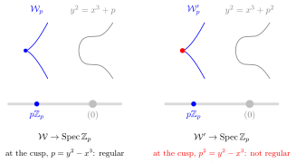
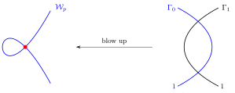
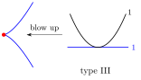
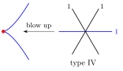
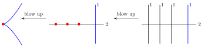
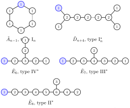
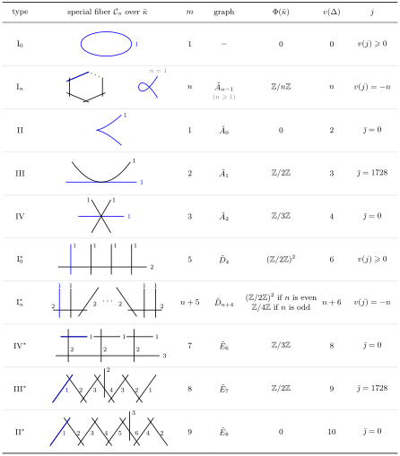
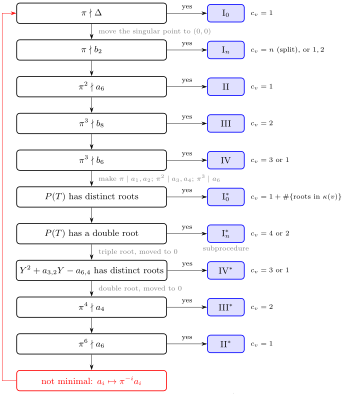

Chapter 6Elliptic curves over local fields
This chapter follows [Sil09, Chapter VII]. For the reduction types we also follow [Poo08, Section 6] and [Mil20, Section II.3]. Silverman's Section VII.4 is merged here with its converse, Section VII.7. The last section, on the Kodaira–Néron classification and Tate's algorithm, follows [Sil94, Chapter IV], [Liu02, Section 10.2] and [Sil09, Section C.15], with [Mil20, Section II.7] for the motivation.
A number field is a finite extension of \(\Q\). A global function field is a finite extension of \(\F_p(t)\) for some prime \(p\) or, equivalently, it is the function field \(k(C)\) of a geometrically integral curve \(C\) defined over a finite field \(\F_q\). We say that \(k\) is a global field if it is either a number field or a global function field.
For \(k\) a global field, we let \(\Omega_k\) denote the set of places of \(k\): equivalence classes of non-trivial absolute values on \(k\). For \(v \in \Omega_k\), we denote by \(k_v\) the completion of \(k\) at \(v\). A local field is the completion of a global field at a place.
Remark 6.0.1. A place \(v\) need not come from a discrete valuation.
- If \(k\) is a number field, the archimedean places correspond to the real embeddings and the pairs of complex conjugate embeddings of \(k\), and for them \(k_v\) is \(\R\) or \(\C\). There \(v\) is an absolute value but not a valuation, and \(k_v\) has no ring of integers in the sense below.
- The non-archimedean places of a number field correspond to the non-zero prime ideals \(\pp\) of its ring of integers. A global function field has only non-archimedean places, and they correspond to the closed points of the nice curve with function field \(k\).
In the non-archimedean case we write \(v\colon k_v^\times \to \Z\) for the normalized discrete valuation of the place, extended by \(v(0) = \infty\). Then \(k_v\) is complete for \(v\) and its residue field is finite.
Situation 6.0.2.
- \(k\) is a global field.
- \(v \in \Omega_k\) is a non-archimedean place, identified with its normalized discrete valuation \(v\colon k_v^\times \to \Z\).
- \(k_v\) is the local field, the completion of \(k\) at \(v\).
- \(\calO_v \coloneqq \{x \in k_v : v(x) \geq 0\}\) is the ring of integers of \(k_v\).
- \(\calO_v^\times \coloneqq \{x \in k_v : v(x) = 0\}\) is the unit group of \(\calO_v\).
- \(\mm_v \coloneqq \{x \in k_v : v(x) > 0\}\) is the maximal ideal of \(\calO_v\).
- \(\pi_v\) is a uniformizer for \(\mm_v\), that is, a generator \(\mm_v = \pi_v\calO_v\). Since \(v\) is normalized, \(v(\pi_v) = 1\).
- \(\kappa(v) \coloneqq \calO_v/\mm_v\) is the residue field, with \(q \coloneqq \#\kappa(v)\) elements and characteristic \(p \coloneqq \operatorname{char}\kappa(v)\).
The residue field \(\kappa(v)\) is finite, hence perfect. This is not an extra hypothesis. In particular \(p\) is positive. The characteristic of \(k\) is arbitrary: it is \(0\) or \(p\).
Draft6.1 Minimal Weierstrass equations
We are in Situation 6.0.2. An elliptic curve \(E\) over \(k_v\) has a Weierstrass equation
\begin{equation*} y^2 + a_1xy + a_3y = x^3 + a_2x^2 + a_4x + a_6 \end{equation*}by part 1 of Theorem 4.1.6, which we encode by \((a_1, a_2, a_3, a_4, a_6) \in k_v^5\).
Given \(u \in k_v^\times\), substituting \(u^{-2}x\) for \(x\) and \(u^{-3}y\) for \(y\) and multiplying by \(u^6\) yields another Weierstrass equation for \(E\) with coefficients
\begin{equation*} (ua_1, u^2a_2, u^3a_3, u^4a_4, u^6a_6). \end{equation*}This is the change of variables (4.1.3) with parameters \((u^{-1}, 0, 0, 0)\), and (4.1.4) gives the same coefficients.
So, choosing \(u \in k_v^\times\) with
\begin{equation*} v(u^ia_i) = v(u^i) + v(a_i) = i\,v(u) + v(a_i) \geq 0, \quad\Longleftrightarrow\quad v(u) \geq -v(a_i)/i, \end{equation*}for each \(i \in \{1, 2, 3, 4, 6\}\) with \(a_i \neq 0\), for instance \(u = \pi_v^n\) with \(n\) large, ensures that
\begin{equation*} (ua_1, u^2a_2, u^3a_3, u^4a_4, u^6a_6) \in \calO_v^5. \end{equation*}In particular, \(v(\Delta(ua_1, \dots, u^6a_6)) \geq 0\), since the discriminant is a polynomial with integer coefficients in the coefficients of the equation (Definition 4.1.2).
So integrality costs nothing, and by itself it says little. The same substitution with \(u = \pi_v\) keeps the coefficients integral, multiplies \(\Delta\) by \(\pi_v^{12}\), and pushes the equation modulo \(\pi_v\) towards \(y^2 = x^3\): a curve can look singular modulo \(\pi_v\) only because its equation was scaled too far (Example 6.2.3). The useful integral equations are the least scaled ones, in the same way that the useful homogeneous coordinates of a \(k_v\)-point are those in \(\calO_v\) not all in \(\mm_v\). Minimizing \(v(\Delta)\) makes this precise, and Proposition 6.1.2 shows that what is left is a change of variables over \(\calO_v\), which still makes sense modulo \(\pi_v\).
Definition 6.1.1. A Weierstrass equation \((a_1, a_2, a_3, a_4, a_6) \in k_v^5\) for \(E\) is called \(v\)-minimal if its coefficients lie in \(\calO_v\) and \(v(\Delta(a_1, \dots, a_6))\) is minimal among all Weierstrass equations for \(E\) with coefficients in \(\calO_v\). This minimal value of \(v(\Delta)\) is the valuation of the minimal discriminant of \(E\) at \(v\).
The following is [Sil09, Proposition VII.1.3]. It uses the transformation formulas (4.1.4) of Proposition 4.1.7.
Proposition 6.1.2. Let \(E\) be an elliptic curve over \(k_v\).
- \(E\) has a \(v\)-minimal Weierstrass equation.
- If a Weierstrass equation for \(E\) has coefficients in \(\calO_v\), then any change of variables (4.1.3) taking it to a \(v\)-minimal Weierstrass equation has \(u, r, s, t \in \calO_v\).
- Any two \(v\)-minimal Weierstrass equations for \(E\) are related by a change of variables (4.1.3) with \(u \in \calO_v^\times\) and \(r, s, t \in \calO_v\).
- The invariant differential \(\omega\) of a \(v\)-minimal Weierstrass equation for \(E\) is unique up to multiplication by an element of \(\calO_v^\times\).
Proof.
For part 1, the discussion before Definition 6.1.1 gives a Weierstrass equation for \(E\) with coefficients in \(\calO_v\). For every such equation \(v(\Delta)\) lies in \(\Z_{\geq 0}\), because \(v\) is discrete and \(\Delta \in \calO_v\), so the minimum is attained.
For part 2, let the unprimed equation have coefficients in \(\calO_v\) and let the primed one, obtained by (4.1.3), be \(v\)-minimal. By minimality \(v(\Delta') \leq v(\Delta)\), and \(u^{12}\Delta' = \Delta\) by Proposition 4.1.7, so \(12\,v(u) = v(\Delta) - v(\Delta') \geq 0\) and \(u \in \calO_v\). All the \(a_i\), \(a_i'\), \(b_i\) and \(b_i'\) lie in \(\calO_v\), since the \(b_i\) are polynomials with integer coefficients in the \(a_i\). By the \(b_6\) and \(b_8\) lines of (4.1.4), \(r\) is a root of
\begin{align*} P_6(T) &\coloneqq 4T^3 + b_2T^2 + 2b_4T + b_6 - u^6b_6', \\ P_8(T) &\coloneqq 3T^4 + b_2T^3 + 3b_4T^2 + 3b_6T + b_8 - u^8b_8', \end{align*}hence of the monic polynomial
\begin{equation*} T\,P_6(T) - P_8(T) = T^4 - b_4T^2 - (2b_6 + u^6b_6')\,T - (b_8 - u^8b_8') \end{equation*}with coefficients in \(\calO_v\). So \(r\) is integral over \(\calO_v\), and \(r \in \calO_v\) because a discrete valuation ring is integrally closed. Next, the \(a_2\) line of (4.1.4) says that \(s\) is a root of the monic polynomial
\begin{equation*} T^2 + a_1T - (a_2 + 3r - u^2a_2'), \end{equation*}whose coefficients are now in \(\calO_v\), so \(s \in \calO_v\). Finally, the \(a_6\) line says that \(t\) is a root of the monic polynomial
\begin{equation*} T^2 + (a_3 + ra_1)\,T - (a_6 + ra_4 + r^2a_2 + r^3 - u^6a_6'), \end{equation*}so \(t \in \calO_v\).
For part 3, two Weierstrass equations for \(E\) are related by some change of variables (4.1.3) with \(u \in k_v^\times\) and \(r, s, t \in k_v\), by part 2 of Theorem 4.1.6. If both are \(v\)-minimal, the first has coefficients in \(\calO_v\), so \(u, r, s, t \in \calO_v\) by part 2. Moreover \(v(\Delta) = v(\Delta')\), so \(v(u) = 0\) and \(u \in \calO_v^\times\).
Part 4 follows from part 3, since \(\omega = u^{-1}\omega'\) by Proposition 4.1.7.
Draft6.2 Reduction modulo \(\pi\)
We are in Situation 6.0.2. The scheme \(\Spec \calO_v\) has two prime ideals: the generic point \((0)\), with residue field \(k_v\), and the special point \(\mm_v\), with residue field \(\kappa(v)\), which is its only closed point. The following definitions are [Poo17, Definitions 3.2.6 and 3.2.8].
Definition 6.2.1. Let \(X\) be a \(k_v\)-scheme. An integral model of \(X\) is an \(\calO_v\)-scheme \(\calX\) together with an isomorphism of \(k_v\)-schemes \(\calX_{k_v} \coloneqq \calX \times_{\Spec \calO_v} \Spec k_v \to X\). The \(k_v\)-scheme \(\calX_{k_v}\) is the generic fiber of \(\calX\), and the \(\kappa(v)\)-scheme
\begin{equation*} \calX_\pi \coloneqq \calX \times_{\Spec \calO_v} \Spec \kappa(v) \end{equation*}is its special fiber.
The subscript \(\pi\) is only notation: the special fiber depends on \(\mm_v\), not on the choice of the uniformizer \(\pi_v\). As it stands, the definition allows useless models: \(X\) itself, viewed as an \(\calO_v\)-scheme, is an integral model of \(X\) with empty special fiber. The models we use are the following.
Let \(E\) be an elliptic curve over \(k_v\). The previous section produced Weierstrass equations for \(E\) with coefficients in \(\calO_v\), and each of them defines an integral model of \(E\) [Poo17, Section 5.7.6].
Definition 6.2.2. Let \((a_1, a_2, a_3, a_4, a_6) \in \calO_v^5\) be a Weierstrass equation for \(E\). Its Weierstrass model is the closed subscheme \(\calW \subseteq \PP^2_{\calO_v}\) cut out by
\begin{equation*} Y^2Z + a_1XYZ + a_3YZ^2 = X^3 + a_2X^2Z + a_4XZ^2 + a_6Z^3. \end{equation*}If the equation is \(v\)-minimal (Definition 6.1.1), then \(\calW\) is a minimal Weierstrass model of \(E\).
The generic fiber of \(\calW\) is the curve in \(\PP^2_{k_v}\) cut out by the same equation, which is \(E\), so \(\calW\) is an integral model of \(E\). It is proper over \(\calO_v\), being closed in \(\PP^2_{\calO_v}\). Write \(a \mapsto \bar a\) for the reduction \(\calO_v \to \kappa(v)\). The special fiber of \(\calW\) is the Weierstrass cubic
\begin{equation*} \calW_\pi\colon Y^2Z + \bar a_1XYZ + \bar a_3YZ^2 = X^3 + \bar a_2X^2Z + \bar a_4XZ^2 + \bar a_6Z^3 \end{equation*}over \(\kappa(v)\). Its discriminant is \(\bar\Delta\), since \(\Delta\) is a polynomial with integer coefficients in the \(a_i\), so by Proposition 4.1.5 the cubic \(\calW_\pi\) is smooth if \(v(\Delta) = 0\) and singular if \(v(\Delta) > 0\).
We would like to define the reduction of \(E\) modulo \(\pi\) to be the special fiber of such a model. Since \(E\) has many integral models, there are two ways to make this a definition:
- show that \(\calX_\pi \cong \calX'_\pi\) for any two integral models \(\calX\) and \(\calX'\) of \(E\); or
- find a canonical integral model for every elliptic curve over \(k_v\), and define the reduction modulo \(\pi\) in terms of it.
The next example shows that the first way is not an option, even among Weierstrass models.
Example 6.2.3. Let \(k = \Q\) and let \(v = p\) be a prime with \(p \geq 5\), so that \(k_v = \Q_p\), \(\calO_v = \Z_p\), \(\pi_v = p\) and \(\kappa(v) = \F_p\). The generic point of \(\Spec \Z_p\) is \((0)\) and its special point is \(p\Z_p\).
The elliptic curves
\begin{equation*} E\colon Y^2Z = X^3 + Z^3 \qquad\text{and}\qquad E'\colon Y^2Z = X^3 + p^6Z^3 \end{equation*}in \(\PP^2_{\Q_p}\) are isomorphic over \(\Q_p\). Indeed, the linear automorphism \((X : Y : Z) \mapsto (p^2X : p^3Y : Z)\) of \(\PP^2_{\Q_p}\) pulls back the equation of \(E'\) to \(p^6\) times the equation of \(E\),
\begin{equation*} (p^3Y)^2Z - (p^2X)^3 - p^6Z^3 = p^6\,(Y^2Z - X^3 - Z^3), \end{equation*}so it maps \(E\) isomorphically onto \(E'\). It is the substitution of Section 6.1 with \(u = p\).
Since both equations have coefficients in \(\Z_p\), the Weierstrass models
\begin{equation*} \calW\colon Y^2Z = X^3 + Z^3 \qquad\text{and}\qquad \calW'\colon Y^2Z = X^3 + p^6Z^3 \end{equation*}in \(\PP^2_{\Z_p}\) have generic fibers \(\calW_{\Q_p} = E\) and \(\calW'_{\Q_p} = E' \cong E\): both are integral models of \(E\). Their special fibers are
\begin{equation*} \calW_p\colon Y^2Z = X^3 + Z^3 \qquad\text{and}\qquad \calW'_p\colon Y^2Z = X^3 \end{equation*}over \(\F_p\). The equation of \(\calW\) has discriminant \(\Delta = -2^4 3^3\), a unit in \(\Z_p\) since \(p \geq 5\), so \(\calW_p\) is an elliptic curve over \(\F_p\). The equation of \(\calW'\) has discriminant \(p^{12}\Delta\), and \(\calW'_p\) has a cusp at the rational point \((0 : 0 : 1)\). So \(\calW_p \not\cong \calW'_p\), although \(\calW_{\Q_p} \cong \calW'_{\Q_p}\). See Figure 6.2.1. The first equation is \(p\)-minimal, and the second is not.

So we take the second way. By part 3 of Proposition 6.1.2, a minimal Weierstrass model of \(E\) is unique up to a change of variables with \(u \in \calO_v^\times\) and \(r, s, t \in \calO_v\), and we follow [Sil09, Section VII.2] in defining the reduction by it.
Definition 6.2.4. Let \(E\) be an elliptic curve over \(k_v\), and let \(\calW\) be a minimal Weierstrass model of \(E\). The reduction of \(E\) modulo \(\pi\) is the special fiber
\begin{equation*} E_\pi \coloneqq \calW_\pi, \end{equation*}a Weierstrass cubic over \(\kappa(v)\). We write \(E_\pi^{\ns}\) for its nonsingular part, as in Proposition 4.2.11. It is \(E_\pi\) if \(E_\pi\) is smooth.
Remark 6.2.5. The reduction \(E_\pi\) is well defined up to isomorphism over \(\kappa(v)\). Two minimal Weierstrass equations for \(E\) are related by a change of variables (4.1.3) with \(u \in \calO_v^\times\) and \(r, s, t \in \calO_v\) (part 3 of Proposition 6.1.2). The formulas (4.1.4) express each \(u^ia_i'\) as a polynomial with integer coefficients in the \(a_j\), \(r\), \(s\) and \(t\), so they remain true after reduction, and the change of variables with parameters \(\bar u \neq 0\), \(\bar r\), \(\bar s\), \(\bar t\) takes the reduction of one equation to the reduction of the other.
Luckily, there is also a canonical integral model with good functorial properties: the Néron model. The following is [Poo17, Definition 3.5.82], for an elliptic curve.
Definition 6.2.6. Let \(E\) be an elliptic curve over \(k_v\). A Néron model of \(E\) is a smooth \(\calO_v\)-scheme \(\calE\) together with an isomorphism \(\calE_{k_v} \to E\), such that for every smooth \(\calO_v\)-scheme \(\calT\) the map \(\calE(\calT) \to E(\calT_{k_v})\), restriction to the generic fiber, is bijective.
Theorem 6.2.7 (Néron). Let \(E\) be an elliptic curve over \(k_v\).
- \(E\) has a Néron model \(\calE\). It is of finite type over \(\calO_v\), unique up to unique isomorphism, and a group scheme over \(\calO_v\).
- Restriction to the generic fiber is a bijection \(\calE(\calO_v) \to E(k_v)\).
- Let \(\calW\) be a minimal Weierstrass model of \(E\), and \(\calE^0 \subseteq \calE\) the open subscheme obtained by removing the non-identity components of the special fiber \(\calE_\pi\). Then the smooth locus \(\calW^{\smooth}\) of \(\calW \to \Spec \calO_v\) is isomorphic to \(\calE^0\).
- If \(E\) has a Weierstrass equation with coefficients in \(\calO_v\) and \(v(\Delta) = 0\), then its Weierstrass model \(\calW\) is smooth and proper over \(\calO_v\), and \(\calW \cong \calE\).
Proof.
Existence and finite type are [Poo17, Theorem 5.7.25]. Uniqueness follows from Yoneda's lemma in the category of smooth \(\calO_v\)-schemes, and the group structure of \(E\) makes \(\calE\) a group object there [Poo17, Section 3.5.16]. Part 2 is the definition with \(\calT = \Spec \calO_v\). Part 3 is [Poo17, Theorem 5.7.30]. For part 4, the equation is \(v\)-minimal because \(v(\Delta) \geq 0\) for every integral equation, and then \(\calW\) is an abelian scheme over \(\calO_v\), in particular smooth, hence regular [Poo17, Section 5.7.6]. So \(\calW\) is already the minimal regular proper model of \(E\) constructed there, and it is its own smooth locus, so \(\calW \cong \calE\) by the first isomorphism of [Poo17, Theorem 5.7.30].
Part 3 of Theorem 6.2.7 is how the Néron model is constructed from a minimal Weierstrass model [Poo17, Section 5.7.6]. Blowing up the non-regular closed points of \(\calW\) repeatedly yields a regular proper integral model of \(E\), in fact the minimal one. Removing the closed subset of its special fiber where it is not smooth over \(\calO_v\), which may contain entire components (those of multiplicity greater than \(1\)), yields \(\calE\). Removing only the singular point of \(E_\pi\) from \(\calW\), if there is one, yields \(\calE^0\).
So the special fiber \(\calE_\pi\) of the Néron model and the reduction \(E_\pi\) of Definition 6.2.4 agree when \(E_\pi\) is smooth, by part 4 of Theorem 6.2.7, but not in general, despite the notation. When \(E_\pi\) is singular, \(E_\pi\) is proper and not smooth, while \(\calE_\pi\) is smooth but not proper, since its identity component is the affine curve \(E_\pi^{\ns}\) (Section 6.3), and possibly not connected (Theorem 6.3.9). What they share is
\begin{equation*} E_\pi^{\ns} \cong \calW^{\smooth}_\pi \cong \calE^0_\pi, \end{equation*}the identity component of \(\calE_\pi\), by part 3 of Theorem 6.2.7.
We now reduce \(k_v\)-points. A \(k_v\)-point \(P\) of \(\PP^2\) has homogeneous coordinates \(P = (X_0 : Y_0 : Z_0)\) with \(X_0, Y_0, Z_0 \in \calO_v\), not all in \(\mm_v\): scale by a power of \(\pi_v\). They are unique up to multiplication by \(\calO_v^\times\), so \(\bar P \coloneqq (\bar X_0 : \bar Y_0 : \bar Z_0)\) is a well-defined \(\kappa(v)\)-point of \(\PP^2\). If \(P \in E(k_v)\), with \(E \subseteq \PP^2_{k_v}\) cut out by the equation of \(\calW\), then \(\bar P\) satisfies the reduced equation, so \(\bar P \in E_\pi(\kappa(v))\). This is the reduction map
\begin{equation*} E(k_v) \to E_\pi(\kappa(v)), \qquad P \mapsto \bar P. \end{equation*}In terms of models, \(P\) extends uniquely to an \(\calO_v\)-point of the proper \(\calO_v\)-scheme \(\calW\) [Poo17, Theorem 3.2.12], namely \(\Spec \calO_v \to \PP^2_{\calO_v}\) given by \((X_0 : Y_0 : Z_0)\), and \(\bar P\) is its restriction to the special point. Let \(O = (0 : 1 : 0)\). Following [Sil09, Section VII.2], we define the subsets
\begin{align*} E_0(k_v) &\coloneqq \{P \in E(k_v) : \bar P \in E_\pi^{\ns}(\kappa(v))\}, \\ E_1(k_v) &\coloneqq \{P \in E(k_v) : \bar P = \bar O\} \end{align*}of \(k_v\)-points with nonsingular reduction, and the kernel of reduction. Since \(\bar O = (0 : 1 : 0)\) is a smooth \(\kappa(v)\)-point of \(E_\pi\) by Proposition 4.1.5, \(E_1(k_v) \subseteq E_0(k_v)\). Neither set depends on the choice of minimal Weierstrass equation: the change of variables of Remark 6.2.5 has coefficients in \(\calO_v\), so it commutes with reduction of \(k_v\)-points, and its reduction maps nonsingular \(\kappa(v)\)-points of one reduced cubic to nonsingular \(\kappa(v)\)-points of the other. An \(\calO_v\)-point of \(\calW\) lies in \(\calW^{\smooth}\) exactly when its restriction to the special point does, so \(E_0(k_v) = \calW^{\smooth}(\calO_v)\), which is \(\calE^0(\calO_v)\) by Theorem 6.2.7.
The following is [Sil09, Proposition VII.2.1].
Proposition 6.2.8. Let \(E\) be an elliptic curve over \(k_v\). Then \(E_0(k_v)\) is a subgroup of \(E(k_v)\), and there is an exact sequence of abelian groups
\begin{equation*} 0 \to E_1(k_v) \to E_0(k_v) \to E_\pi^{\ns}(\kappa(v)) \to 0, \end{equation*}where the map on the right is the reduction map \(P \mapsto \bar P\).
Proof.
Fix a minimal Weierstrass equation for \(E\), let \(F\) be its cubic form, with coefficients in \(\calO_v\), and let \(f(x, y) \coloneqq F(x, y, 1)\). Then \(\bar F\) is the cubic form of \(E_\pi\). Neither \(E\) nor \(E_\pi\) contains a line: the line at infinity meets each of them only at \(O\), respectively \(\bar O\) (Definition 4.1.2), and an affine line \(y = \alpha x + \beta\) or \(x = \gamma\) on the curve would make \(f(x, \alpha x + \beta)\), of degree \(3\) in \(x\), or \(f(\gamma, y)\), monic of degree \(2\) in \(y\), vanish identically.
The reduction map is surjective. Let \(Q \in E_\pi^{\ns}(\kappa(v))\). If \(Q = \bar O\), then \(Q\) is the reduction of \(O\). Otherwise \(Q = (\alpha, \beta)\) is affine, and \(\partial\bar f/\partial x\) or \(\partial\bar f/\partial y\) is nonzero at \(Q\), since \(Q\) is nonsingular. Suppose that \((\partial\bar f/\partial y)(\alpha, \beta) \neq 0\), choose \(x_0 \in \calO_v\) with \(\bar x_0 = \alpha\), and let \(g(T) \coloneqq f(x_0, T) \in \calO_v[T]\). Then \(\bar g(\beta) = 0\) and \(\bar g'(\beta) \neq 0\). The \(\calO_v\)-scheme \(\Spec \calO_v[T, g'(T)^{-1}]/(g(T))\) is étale, and \(\beta\) is one of its \(\kappa(v)\)-points, so by Hensel's lemma [Poo17, Theorem 3.5.63], which uses that \(\calO_v\) is complete, there is \(y_0 \in \calO_v\) with \(g(y_0) = 0\) and \(\bar y_0 = \beta\). Then \(P \coloneqq (x_0 : y_0 : 1) \in E(k_v)\) and \(\bar P = Q\), so \(P \in E_0(k_v)\). If instead \((\partial\bar f/\partial x)(\alpha, \beta) \neq 0\), exchange the roles of the two coordinates: lift \(\beta\) to \(y_0 \in \calO_v\) and apply Hensel's lemma to \(f(T, y_0)\).
Lines and reduction. Let \(L\) be a line in \(\PP^2\) defined over \(k_v\). Write it as \(aX + bY + cZ = 0\) with \(a, b, c \in \calO_v\), not all in \(\mm_v\). Then the linear form \(\calO_v^3 \to \calO_v\) given by \((a, b, c)\) is surjective, so its kernel \(M\) is a direct summand of \(\calO_v^3\), free of rank \(2\). Let \(w, w'\) be a basis of \(M\). The map sending \((s : t)\) to \(sw + tw'\), from \(\PP^1\) to \(L\), is an isomorphism over \(k_v\), and since \(M\) is a direct summand, \(\bar w, \bar w'\) is a basis of the kernel of \((\bar a, \bar b, \bar c)\), so its reduction is an isomorphism \(\PP^1 \to \bar L\) over \(\kappa(v)\), compatible with the reduction of \(k_v\)-points. The binary cubic
\begin{equation*} G(s, t) \coloneqq F(sw + tw') \in \calO_v[s, t] \end{equation*}is the restriction of \(F\) to \(L\). It is nonzero, because \(E\) contains no line. We count the \(k_v\)-points of \(L \cap E\) with multiplicity as the roots of \(G\) in \(\PP^1(k_v)\). Suppose that \(G\) has three roots \((s_i : t_i) \in \PP^1(k_v)\), with \(s_i, t_i \in \calO_v\) not both in \(\mm_v\), corresponding to \(P_1, P_2, P_3 \in E(k_v)\). Then
\begin{equation*} G = c\prod_{i=1}^3 (t_is - s_it) \end{equation*}for some \(c \in k_v^\times\). By Gauss's lemma the product of the three linear forms has a coefficient in \(\calO_v^\times\), so \(c \in \calO_v\), and \(\bar G = \bar c\prod_i (\bar t_is - \bar s_it)\). On the other hand \(\bar G(s, t) = \bar F(s\bar w + t\bar w')\) is the restriction of \(\bar F\) to \(\bar L\), which is nonzero because \(E_\pi\) contains no line. So \(\bar c \neq 0\), and \(\bar L\) meets \(E_\pi\) in \(\bar P_1, \bar P_2, \bar P_3\), counted with multiplicity.
The group law. Let \(P_1, P_2 \in E_0(k_v)\), let \(L\) be the line through them (the tangent line to \(E\) at \(P_1\) if \(P_1 = P_2\)), and let \(P_3\) be the third \(k_v\)-point of \(L \cap E\), counted with multiplicity, so that \(P_3 \in E(k_v)\) and \(P_1 + P_2 + P_3 = O\) by part 1 of Proposition 4.2.4. By the previous step \(\bar L\) meets \(E_\pi\) in \(\bar P_1, \bar P_2, \bar P_3\). If \(E_\pi\) has a singular point \(S\), every line through \(S\) meets \(E_\pi\) at \(S\) with multiplicity at least \(2\), since all partial derivatives of \(\bar F\) vanish at \(S\). As \(\bar P_1, \bar P_2 \neq S\), if \(\bar P_3 = S\) the factorization of \(\bar G\) would give \(S\) multiplicity exactly \(1\), a contradiction. So \(\bar P_3 \in E_\pi^{\ns}(\kappa(v))\), that is, \(P_3 \in E_0(k_v)\), and
\begin{equation*} \bar P_1 + \bar P_2 + \bar P_3 = \bar O \end{equation*}by the chord-and-tangent construction of the group law on \(E_\pi^{\ns}\) (Proposition 4.2.11, or part 1 of Proposition 4.2.4 if \(E_\pi\) is smooth).
Taking \(P_2 = O\), which lies in \(E_0(k_v)\), gives \(P_3 = -P_1 \in E_0(k_v)\) and \(\overline{-P_1} = -\bar P_1\). In general, then, \(P_1 + P_2 = -P_3 \in E_0(k_v)\) and \(\overline{P_1 + P_2} = -\bar P_3 = \bar P_1 + \bar P_2\). So \(E_0(k_v)\) is a subgroup of \(E(k_v)\), and reduction is a homomorphism \(E_0(k_v) \to E_\pi^{\ns}(\kappa(v))\). Its kernel is \(E_1(k_v)\) by definition, and it is surjective by the first step.
The following is [Sil09, Proposition VII.3.1], the local input to the weak Mordell–Weil theorem.
Proposition 6.2.9. Let \(E\) be an elliptic curve over \(k_v\), and let \(m \geq 1\) be an integer with \(p \nmid m\).
Proof.
For part 1, fix a minimal Weierstrass equation for \(E\). The group \(E_1(k_v)\) is isomorphic to the group \(\hat E(\mm_v)\) attached to the formal group \(\hat E\) of \(E\) [Sil09, Proposition VII.2.2], and every element of finite order of \(\hat E(\mm_v)\) has order a power of \(p\) [Sil09, Proposition IV.3.2(b)]. Since \(p \nmid m\), the only \(k_v\)-point of \(E_1(k_v)\) killed by \(m\) is \(O\).
For part 2, if \(E_\pi\) is smooth, then \(E_\pi^{\ns} = E_\pi\) and \(E_0(k_v) = E(k_v)\), so by Proposition 6.2.8 reduction is a homomorphism \(E(k_v) \to E_\pi(\kappa(v))\) with kernel \(E_1(k_v)\). Its restriction to \(E[m](k_v)\) has kernel \(E_1(k_v) \cap E[m](k_v) = \{O\}\) by part 1.
The next result, due to Cassels, bounds the denominators of the coordinates of a torsion \(k_v\)-point. It is [Sil09, Theorem VII.3.4]. Unlike Proposition 6.2.9, the Weierstrass equation need not be \(v\)-minimal.
Theorem 6.2.10. Let \(E\) be an elliptic curve over \(k_v\), given by a Weierstrass equation
\begin{equation*} y^2 + a_1xy + a_3y = x^3 + a_2x^2 + a_4x + a_6 \end{equation*}with all \(a_i \in \calO_v\), not necessarily \(v\)-minimal. Let \(P \in E(k_v)\) be a \(k_v\)-point of exact order \(m \geq 2\).
In part 2, where \(\operatorname{char} k = 0\), \(v(p)\) is the ramification index of \(k_v\) over \(\Q_p\). It is \(1\) for \(k_v = \Q_p\).
Proof.
Write \(x \coloneqq x(P)\) and \(y \coloneqq y(P)\). Since \(m \geq 2\), \(P \neq O\) is affine.
Any integral equation. If \(v(x) \geq 0\), then \(y\) is a root of the monic polynomial
\begin{equation*} T^2 + (a_1x + a_3)\,T - (x^3 + a_2x^2 + a_4x + a_6) \in \calO_v[T], \end{equation*}so \(y \in \calO_v\), because a discrete valuation ring is integrally closed. Then both parts hold, since \(r \geq 0\). Suppose instead that \(v(x) < 0\). The right side of the Weierstrass equation has valuation exactly \(3v(x)\). If \(v(y) \geq v(x)\), the left side would have valuation at least \(\min(2v(y), v(x) + v(y), v(y)) \geq 2v(x) > 3v(x)\). So \(v(y) < v(x) < 0\), the left side has valuation exactly \(2v(y)\), and \(2v(y) = 3v(x)\):
\begin{equation*} v(x) = -2s, \qquad v(y) = -3s \qquad\text{for an integer } s \geq 1. \end{equation*}Reduction to a \(v\)-minimal equation. By part 2 of Proposition 6.1.2, a change of variables (4.1.3),
\begin{equation*} x = u^2x' + r_0, \qquad y = u^3y' + s_0u^2x' + t_0, \end{equation*}with \(u, r_0, s_0, t_0 \in \calO_v\), takes the equation to a \(v\)-minimal one, with coordinates \(x', y'\). Suppose that \(v(x) < 0\). Then \(v(x'(P)) < 0\), for otherwise \(x \in \calO_v\). So by the previous step, applied to the \(v\)-minimal equation, \(v(y'(P)) < v(x'(P)) < 0\), and therefore
\begin{equation*} v(x) \geq v(x'(P)), \qquad v(y) \geq v(y'(P)). \end{equation*}Hence both parts for the \(v\)-minimal equation imply them for the given one, and we may assume that the equation is \(v\)-minimal.
The \(v\)-minimal case. Suppose that \(v(x) < 0\), with \(s\) as above. Then \(P = (\pi_v^{3s}x : \pi_v^{3s}y : \pi_v^{3s})\) with \(\pi_v^{3s}y \in \calO_v^\times\) and the other two coordinates in \(\mm_v\), so \(\bar P = (0 : 1 : 0) = \bar O\) and \(P \in E_1(k_v)\). Under the isomorphism \(E_1(k_v) \cong \hat E(\mm_v)\) [Sil09, Proposition VII.2.2], \(P\) corresponds to \(z \coloneqq -x/y\), of exact order \(m\), with \(v(z) = -2s + 3s = s\).
For part 1: every element of finite order of \(\hat E(\mm_v)\) has order a power of \(p\) [Sil09, Proposition IV.3.2(b)], which contradicts the hypothesis on \(m\). So \(v(x) \geq 0\), and the first step gives \(x, y \in \calO_v\).
For part 2: since \(z\) has exact order \(p^n\) in \(\hat E(\mm_v)\), [Sil09, Theorem IV.6.1] gives \(s = v(z) \leq v(p)/(p^n - p^{n-1})\), so \(s \leq r\), as \(s\) is an integer. Hence \(v(\pi_v^{2r}x) = 2(r - s) \geq 0\) and \(v(\pi_v^{3r}y) = 3(r - s) \geq 0\).
The following is [Sil09, Application VII.3.5].
Example 6.2.11. Let \(k = \Q\), let \(E\) be an elliptic curve over \(\Q\) given by a Weierstrass equation with coefficients in \(\Z\), and let \(P \in E(\Q)\) be a rational point of exact order \(m \geq 3\). Let \(p\) be a prime and apply Theorem 6.2.10 to \(P \in E(\Q_p)\). If \(m\) is not a power of \(p\), then \(x(P), y(P) \in \Z_p\) by part 1. If \(m = p^n\), then \(v(p) = 1\), and
\begin{equation*} r = \left\lfloor \frac{1}{p^n - p^{n-1}} \right\rfloor = 0 \end{equation*}unless \(p^n - p^{n-1} = 1\), that is, \(p = 2\) and \(n = 1\), which \(m \geq 3\) excludes. So \(x(P), y(P) \in \Z_p\) by part 2. Hence \(x(P), y(P) \in \Z\): a rational torsion point of order at least \(3\) has integer coordinates.
This fails for rational points of order \(2\). The curve
\begin{equation*} E\colon y^2 + xy = x^3 + 4x + 1 \end{equation*}has discriminant \(-65^2 \neq 0\), and \(P = (-1/4, 1/8) \in E(\Q)\): both sides equal \(-1/64\). Since \(-P = (x(P), -y(P) - x(P)) = P\), the rational point \(P\) has order \(2\). At \(p = 2\), with \(n = 1\), the theorem gives \(r = 1\) and says only that \(4x(P), 8y(P) \in \Z_2\), which is attained.
Draft6.3 Good and bad reduction
We are in Situation 6.0.2. By Proposition 4.1.5 and Remark 4.1.11, the reduction \(E_\pi\) of an elliptic curve \(E\) over \(k_v\) (Definition 6.2.4) is smooth, or has a node, or has a cusp. Since \(\kappa(v)\) is perfect, its singular point is a rational point and the tangent line at a cusp is defined over \(\kappa(v)\), so Proposition 4.2.11 applies to \(E_\pi\) with no further hypothesis. The following is [Sil09, Section VII.5]. Compare [Poo08, Section 6.4] and [Mil20, Section II.3].
Definition 6.3.1. Let \(E\) be an elliptic curve over \(k_v\), with reduction \(E_\pi\).
- \(E\) has good reduction if \(E_\pi\) is smooth, hence an elliptic curve over \(\kappa(v)\).
- \(E\) has multiplicative reduction if \(E_\pi\) has a node. The reduction is split if the slopes of the tangent lines at the node lie in \(\kappa(v)\), and nonsplit otherwise.
- \(E\) has additive reduction if \(E_\pi\) has a cusp.
In the last two cases \(E\) has bad reduction. It has semistable reduction if its reduction is good or multiplicative.
The reduction type does not depend on the choice of minimal Weierstrass equation, since \(E_\pi\) is well defined up to isomorphism (Remark 6.2.5).
Proposition 6.3.2. Let \(E\) be an elliptic curve over \(k_v\), given by a minimal Weierstrass equation with discriminant \(\Delta\) and invariants \(c_4\), \(c_6\).
- \(E\) has good reduction if and only if \(v(\Delta) = 0\).
- \(E\) has multiplicative reduction if and only if \(v(\Delta) > 0\) and \(v(c_4) = 0\). Then \(E_\pi^{\ns} \cong \Gm\) if the reduction is split, and \(E_\pi^{\ns} \cong \Gm^{(d)}\), with \(d\) as in (4.2.3) for the singular normal form of \(E_\pi\) and \(L_d = \F_{q^2}\), if it is nonsplit.
- \(E\) has additive reduction if and only if \(v(\Delta) > 0\) and \(v(c_4) > 0\). Then \(E_\pi^{\ns} \cong \Ga\).
If \(\operatorname{char} \kappa(v) \neq 2\) and the reduction is multiplicative, it is split if and only if \(-\bar c_6\) is a square in \(\kappa(v)\).
Proof.
The reduced equation has discriminant \(\bar\Delta\) and invariants \(\bar c_4\), \(\bar c_6\), because these are polynomials with integer coefficients in the \(a_i\). So the three cases follow from Proposition 4.1.5 and Remark 4.1.11, and the descriptions of \(E_\pi^{\ns}\) from Proposition 4.2.11 over \(\kappa(v)\). In the nonsplit case \(L_d\) is a quadratic extension of \(\kappa(v)\), which is \(\F_{q^2}\). For the last statement, move the node to \((0, 0)\) as in (4.2.2), a change of variables with \(u = 1\), which does not change \(c_6\). There \(b_4 = b_6 = 0\), so \(c_6 = -b_2^3 + 36b_2b_4 - 216b_6 = -b_2^3\), and \(-c_6 = b_2^3\) is a square exactly when \(b_2 = d\) is, that is, when \(L_d \cong \kappa(v) \times \kappa(v)\). Another minimal equation changes \(c_6\) by \(u^{-6}\) with \(u \in \calO_v^\times\), a square.
Counting \(\kappa(v)\)-points with Example 2.1.8 and part 4 of Proposition 2.1.9, and adding the singular point, gives the following table [Mil20, Section II.3]. Here \(a \coloneqq q + 1 - \#E_\pi(\kappa(v))\), as in Definition 5.3.7 when \(E_\pi\) is smooth.
| reduction | singularity | \(E_\pi^{\ns}\) | \(\#E_\pi^{\ns}(\kappa(v))\) | \(a\) |
|---|---|---|---|---|
| good | none | \(E_\pi\) | \(q + 1 - a\) | \(\lvert a \rvert \leq 2\sqrt q\) |
| split multiplicative | node | \(\Gm\) | \(q - 1\) | \(1\) |
| nonsplit multiplicative | node | \(\Gm^{(d)}\) | \(q + 1\) | \(-1\) |
| additive | cusp | \(\Ga\) | \(q\) | \(0\) |
These values of \(a\) at the places of bad reduction are the ones that enter the \(L\)-function of an elliptic curve over a number field (Chapter 13).
Remark 6.3.3. By part 3 of Theorem 6.2.7, \(E_\pi^{\ns}\) is the identity component \(\calE^0_\pi\) of the special fiber of the Néron model. So the reduction is good, multiplicative or additive according as \(\calE^0_\pi\) is an elliptic curve, a torus (Definition 2.1.10), split exactly when the reduction is, or \(\Ga\). This is the form of the definition that generalizes to abelian varieties.
A Weierstrass equation with coefficients in \(\calO_v\) and \(v(\Delta) < 12\), or with \(v(c_4) = 0\), is \(v\)-minimal. Indeed, another integral equation has discriminant \(u^{-12}\Delta\) and invariant \(u^{-4}c_4\) (Proposition 4.1.7), both integral, so \(v(u) \leq 0\) in either case, and its discriminant has valuation at least \(v(\Delta)\). The following is [Sil09, Example VII.5.2].
Example 6.3.4. Let \(k = \Q\) and \(v = p \geq 5\). Each of the following equations has \(v(\Delta) < 12\), so it is \(p\)-minimal.
- \(E\colon y^2 = x^3 + px^2 + 1\) has \(\Delta = -16(4p^3 + 27)\), a unit: good reduction.
- \(E\colon y^2 = x^3 + x^2 + p\) has \(\Delta = -16p(27p + 4)\) and \(c_4 = 16\): multiplicative reduction. The reduction \(y^2 = x^2(x + 1)\) has tangent lines \(y = \pm x\) at the node, so it is split. Accordingly \(-c_6 = 64 + 864p\) is a square modulo \(p\).
- Let \(\varepsilon \in \Z\) be a non-square modulo \(p\). Then \(E\colon y^2 = x^3 + \varepsilon x^2 + p\) has \(\Delta = -16p(4\varepsilon^3 + 27p)\) and \(c_4 = 16\varepsilon^2\), and its reduction \(y^2 = x^2(x + \varepsilon)\) has tangent slopes \(\pm\sqrt\varepsilon \notin \F_p\): nonsplit multiplicative reduction.
- \(E\colon y^2 = x^3 + p\) has \(\Delta = -432p^2\) and \(c_4 = 0\): additive reduction. Over \(K' \coloneqq \Q_p(\varpi)\) with \(\varpi^6 = p\), the substitution \(x = \varpi^2x'\), \(y = \varpi^3y'\) gives \(y'^2 = x'^3 + 1\), with discriminant \(-432\), a unit: \(E\) acquires good reduction over \(K'\).
The last example shows that the reduction type can change under a finite extension. To make sense of this we need the reduction over a finite extension of \(k_v\).
Remark 6.3.5. Let \(K'\) be a finite extension of \(k_v\). Then \(K'\) is again a local field: it is the completion of a finite extension of \(k\) at a place above \(v\). We write \(v'\) for its normalized valuation, \(\calO'\) for its ring of integers, \(\mm'\) for the maximal ideal, \(\pi'\) for a uniformizer and \(\kappa'\) for the residue field. The valuation \(v\) extends uniquely to \(K'\), and \(v' = e\,v\) on \(k_v\), where \(e\) is the ramification index of \(K'/k_v\). The residue field \(\kappa'\) has degree \(f\) over \(\kappa(v)\), and \(ef = [K' : k_v]\). The extension is unramified if \(e = 1\). In general one also asks that the residue extension \(\kappa'/\kappa(v)\) be separable. Here it is an extension of finite fields, so this is automatic and we omit it. If \(K'/k_v\) is unramified, then \(v' = v\) on \(k_v\), \(\pi_v\) is also a uniformizer of \(K'\), and \([K' : k_v] = [\kappa' : \kappa(v)]\). Every finite extension of \(\kappa(v)\) arises in this way from exactly one unramified extension of \(k_v\) (Section 6.4). The results of this chapter so far apply to \(E_{K'}\), with its own minimal Weierstrass equation, reduction \((E_{K'})_{\pi'}\), and subgroups \(E_0(K') \supseteq E_1(K')\).
Definition 6.3.6. An elliptic curve \(E\) over \(k_v\) has potential good reduction if \(E_{K'}\) has good reduction for some finite extension \(K'\) of \(k_v\).
The following is [Sil09, Propositions VII.5.4 and VII.5.5].
Proposition 6.3.7 (Semistable reduction theorem). Let \(E\) be an elliptic curve over \(k_v\), and \(K'\) a finite extension of \(k_v\).
- If \(K'/k_v\) is unramified, then a minimal Weierstrass equation for \(E\) is minimal for \(E_{K'}\), and \(E_{K'}\) has good, multiplicative or additive reduction according as \(E\) does.
- If \(E\) has good, respectively multiplicative, reduction, then a minimal Weierstrass equation for \(E\) is minimal for \(E_{K'}\), and \(E_{K'}\) has good, respectively multiplicative, reduction.
- There is a finite extension \(K''\) of \(k_v\) such that \(E_{K''}\) has good or split multiplicative reduction.
When a minimal Weierstrass equation for \(E\) stays minimal for \(E_{K'}\), as in parts 1 and 2, the reduction \((E_{K'})_{\pi'}\) is the base change \((E_\pi)_{\kappa'}\): both are cut out by the same reduced equation. Whether a multiplicative reduction is split can therefore change: it is split over \(K'\) exactly when \(\kappa'\) contains the slopes of the tangent lines at the node. For instance, nonsplit multiplicative reduction becomes split over the unramified extension of degree \(2\).
Proof.
For part 2, fix a minimal Weierstrass equation for \(E\), with \(\Delta\) and \(c_4\), and let a change of variables (4.1.3) take it to a minimal equation for \(E_{K'}\), with \(\Delta'\) and \(c_4'\). By part 2 of Proposition 6.1.2 over \(K'\), the parameter \(u\) lies in \(\calO'\), and \(\Delta' = u^{-12}\Delta\), \(c_4' = u^{-4}c_4\) are integral, so
\begin{equation*} 0 \leq v'(u) \leq \min\bigl(v'(\Delta)/12,\ v'(c_4)/4\bigr). \end{equation*}If \(v(\Delta) = 0\) or \(v(c_4) = 0\), then \(v'(u) = 0\), so \(v'(\Delta') = v'(\Delta)\): our equation, integral over \(K'\), is minimal for \(E_{K'}\). Its \(v'(\Delta)\) and \(v'(c_4)\) are zero exactly when \(v(\Delta)\) and \(v(c_4)\) are, and Proposition 6.3.2 over \(K'\) gives the same type.
We prove part 1 only when \(p \geq 5\). For \(p = 2, 3\) it follows from Tate's algorithm (Corollary 6.5.13). Since \(2\) and \(3\) are units in \(\calO_v\), \(E\) has a minimal equation \(y^2 = x^3 + Ax + B\), and \(E_{K'}\) also has a minimal equation of this short form. It is obtained from ours by a change of variables \(x = u^2x'\), \(y = u^3y'\), the only ones preserving the short form, with \(u \in \calO'\) by part 2 of Proposition 6.1.2. Since \(K'/k_v\) is unramified, \(v' = v\) on \(k_v\) (Remark 6.3.5), and \(u_0 \coloneqq \pi_v^{v'(u)} \in k_v\) satisfies \(u/u_0 \in \calO'^\times\). The substitution \(x = u_0^2x'\), \(y = u_0^3y'\) gives \(u_0^{-4}A = (u/u_0)^4 u^{-4}A\) and \(u_0^{-6}B\), both integral, over \(k_v\), with discriminant of valuation \(v(\Delta) - 12v'(u)\). By minimality over \(k_v\), \(v'(u) = 0\). So the equation is minimal over \(K'\), with the same \(v(\Delta)\) and \(v(c_4)\), and Proposition 6.3.2 gives the same type.
We prove part 3 only when \(p \neq 2\). Over a finite extension \(K''\) of \(k_v\), \(E\) has a Legendre form \(y^2 = x(x - 1)(x - \lambda)\) with \(\lambda \neq 0, 1\) [Sil09, Proposition III.1.7], for which
\begin{equation*} c_4 = 16(\lambda^2 - \lambda + 1), \qquad \Delta = 16\lambda^2(\lambda - 1)^2. \end{equation*}Let \(\calO''\) be the ring of integers of \(K''\) and \(\pi''\) a uniformizer. If \(\lambda \in \calO''\) and \(\bar\lambda \neq 0, 1\), then \(\Delta\) is a unit: good reduction. If \(\lambda \in \calO''\) and \(\bar\lambda \in \{0, 1\}\), then \(c_4\) is a unit and \(\Delta\) is not: multiplicative reduction. If \(\lambda \notin \calO''\), let \(r \geq 1\) with \(\mu \coloneqq \pi''^r\lambda\) a unit, and adjoin a square root \(\varpi\) of \(\pi''\), a separable extension since \(p \neq 2\). The substitution \(x = \pi''^{-r}x'\), \(y = \varpi^{-3r}y'\) gives \(y'^2 = x'(x' - \pi''^r)(x' - \mu)\), whose \(c_4 = 16(\pi''^{2r} - \pi''^r\mu + \mu^2)\) is a unit and whose \(\Delta\) is not: multiplicative reduction. In the multiplicative cases \(c_4\) is a unit, so the equation is minimal over every finite extension (see before Example 6.3.4), and its reduction over an extension is the base change of the nodal cubic. The slopes of the tangent lines at the node generate an extension of degree at most \(2\) of the residue field, which comes from an unramified extension (Remark 6.3.5). Over it the reduction is split.
Proposition 6.3.8. Let \(E\) be an elliptic curve over \(k_v\). Then \(E\) has potential good reduction if and only if \(j(E) \in \calO_v\).
Proof.
If \(E_{K'}\) has good reduction, with a minimal equation over \(K'\) with \(\Delta'\) a unit, then \(j(E) = c_4'^3/\Delta'\) is integral in \(K'\), and it lies in \(k_v\), so \(j(E) \in \calO_v\). We prove the converse only when \(p \neq 2\). Take a Legendre form over a finite extension \(K''\) of \(k_v\), as in the proof of Proposition 6.3.7. Here \(K''\) is separable over \(k_v\), since it is obtained by adjoining the roots of the separable cubic \(4x^3 + b_2x^2 + 2b_4x + b_6\) and square roots, and \(p \neq 2\). Then
\begin{equation*} 256(\lambda^2 - \lambda + 1)^3 - j\lambda^2(\lambda - 1)^2 = 0. \end{equation*}If \(j\) is integral, this polynomial in \(\lambda\) has integral coefficients and leading coefficient \(256\), a unit, so \(\lambda\) is integral. And reducing modulo \(\pi''\) at \(\bar\lambda = 0\) or \(1\) would give \(256 = 0\). So \(\bar\lambda \neq 0, 1\), and the Legendre form has good reduction.
For instance, the curve of part 4 of Example 6.3.4 has \(j = 0\), so potential good reduction, as we saw directly. The curve of part 2 has \(v(j) = 3v(c_4) - v(\Delta) = -1\), and keeps multiplicative reduction over every finite extension.
Finally, the quotient \(E(k_v)/E_0(k_v)\) of the filtration of Section 6.2 is finite. The first part below follows from Theorem 6.2.7: \(E(k_v) = \calE(\calO_v)\) and \(E_0(k_v) = \calE^0(\calO_v)\). Restricting an \(\calO_v\)-point to the special point and taking its component gives a homomorphism from \(\calE(\calO_v)\) to the group of components of \(\calE_\pi\) defined over \(\kappa(v)\) (the \(\kappa(v)\)-points of its component group), finite because \(\calE\) is of finite type. Its kernel is \(\calE^0(\calO_v)\): an \(\calO_v\)-point whose special point lies in the open subscheme \(\calE^0\) factors through it, since every open subset of \(\Spec \calO_v\) containing the special point is everything. The second part comes from the classification of the special fibers of Néron models, Theorem 6.5.8. It is Corollary 6.5.9.
Theorem 6.3.9 (Kodaira, Néron). Let \(E\) be an elliptic curve over \(k_v\), and \(\Delta\) the discriminant of a minimal Weierstrass equation.
Proof (Sil09).
See [Sil09, Theorem VII.6.1 and Corollary VII.6.2].
Draft6.4 Inertia and the criterion of Néron–Ogg–Shafarevich
Situation 6.4.1. In addition to Situation 6.0.2:
- \(\kappa(v)\) is identified with \(\F_q\).
- \(k_v^{\operatorname{sep}}\) is a separable closure of \(k_v\), and \(\Gal_{k_v} \coloneqq \Gal(k_v^{\operatorname{sep}}/k_v)\). We use \(k_v^{\operatorname{sep}}\) rather than an algebraic closure because \(k_v\) is imperfect when \(\operatorname{char} k = p\).
- \(v\) extends uniquely to \(k_v^{\operatorname{sep}}\) (Remark 6.3.5). The residue field of its valuation ring is an algebraic closure \(\Fbar_q\) of \(\F_q\): since \(\F_q\) is perfect, each of its finite extensions is separable, and is the residue field of an unramified extension of \(k_v\) inside \(k_v^{\operatorname{sep}}\) (see below).
- \(k_v^{\unr} \subseteq k_v^{\operatorname{sep}}\) is the maximal unramified extension of \(k_v\), the union of the finite unramified extensions.
- \(I_v \coloneqq \Gal(k_v^{\operatorname{sep}}/k_v^{\unr})\) is the inertia group. When \(k = \Q\) and \(v = p\), we write \(I_p\) for \(I_v\).
Good reduction has a characterization in terms of the Galois action on torsion points alone, without Weierstrass equations. For instance, it shows at once that good reduction is an isogeny invariant (Corollary 6.4.8). We first review the inertia group. The unramified extensions of \(k_v\) correspond to the extensions of its residue field: for each \(n \geq 1\) there is exactly one unramified extension of degree \(n\) inside \(k_v^{\operatorname{sep}}\), its residue field is \(\F_{q^n}\), and it is Galois over \(k_v\) with group \(\Gal(\F_{q^n}/\F_q)\), generated by the lift of the Frobenius automorphism \(\sigma\colon \alpha \mapsto \alpha^q\). So there is an exact sequence
\begin{equation} \label{eq:lf-inertia} 1 \to I_v \to \Gal_{k_v} \to \Gal_{\F_q} \to 1, \tag{6.4.1} \end{equation}where the map on the right is the action on \(\Fbar_q\): every \(\tau \in \Gal_{k_v}\) preserves the valuation, hence acts on the residue field \(\Fbar_q\). In other words, \(I_v\) is the subgroup of \(\Gal_{k_v}\) acting trivially on \(\Fbar_q\) [Sil09, Section VII.4]. The group \(\Gal_{\F_q}\) is topologically generated by \(\sigma\), and \(\Gal(k_v^{\unr}/k_v) \cong \Gal_{\F_q}\).
Remark 6.4.2. The inertia group has a largest pro-\(p\) subgroup \(P_v\), the wild inertia group, and the tame quotient is \(I_v/P_v \cong \prod_{\ell \neq p} \Z_\ell(1)\), with \(\Gal_{\F_q}\) acting through the cyclotomic character. We will not need this.
Definition 6.4.3. A set \(\Sigma\) with an action of \(\Gal_{k_v}\) is unramified if \(I_v\) acts trivially on \(\Sigma\), and ramified otherwise.
Remark 6.4.4. By \eqref{eq:lf-inertia}, \(\Sigma\) is unramified exactly when the action of \(\Gal_{k_v}\) factors through \(\Gal_{k_v}/I_v \cong \Gal_{\F_q}\): it is then determined by the action of a single element, any lift of \(\sigma\), and it can be read off on the residue field. The name comes from fields. If \(\Sigma\) is finite and the action is continuous, that is, every element of \(\Sigma\) has an open stabilizer, as for \(E[m](k_v^{\operatorname{sep}})\), then the kernel of the action is an open normal subgroup of \(\Gal_{k_v}\), and its fixed field \(L\), the field cut out by \(\Sigma\), is a finite Galois extension of \(k_v\). Then \(\Sigma\) is unramified exactly when \(L \subseteq k_v^{\unr}\), that is, when \(L/k_v\) is unramified. For instance, the set of roots in \(k_v^{\operatorname{sep}}\) of a separable polynomial \(f \in k_v[x]\) is unramified exactly when the splitting field of \(f\) is unramified over \(k_v\).
There is also a geometric picture. Think of \(\Spec \calO_v\) as a small disc, with the special point as its center and \(\Spec k_v\) as the punctured disc. Finite \(\Gal_{k_v}\)-sets play the role of finite covering spaces of the punctured disc, and \(I_v\) the role of the loop around the center: a covering extends across the center exactly when this loop acts trivially on its fibers. A family of elliptic curves over the whole disc has no monodromy, by Ehresmann's theorem, so good reduction, which extends \(E\) to a smooth family over \(\Spec \calO_v\), should force \(E[m](k_v^{\operatorname{sep}})\) to be unramified. This is Proposition 6.4.6, and Theorem 6.4.7 is its converse. In the language of schemes, a finite étale \(k_v\)-scheme \(X\) has \(X(k_v^{\operatorname{sep}})\) unramified exactly when \(X\) extends to a finite étale \(\calO_v\)-scheme.
For an elliptic curve \(E\) over \(k_v\) and \(m\) with \(\operatorname{char} k \nmid m\), this applies to \(E[m](k_v^{\operatorname{sep}})\) (part 1 of Corollary 4.5.1): \(E[m](k_v^{\operatorname{sep}})\) is unramified exactly when \(I_v \subseteq \ker\bar\rho_{E,m}\), that is, when \(E[m](k_v^{\operatorname{sep}}) \subseteq E(k_v^{\unr})\), or again when all the points of \(E[m](k_v^{\operatorname{sep}})\) are defined over one finite unramified extension of \(k_v\). Likewise \(T_\ell(E)\) (Definition 4.5.4) is unramified exactly when every \(E[\ell^n](k_v^{\operatorname{sep}})\) is.
Example 6.4.5.
- If \(p \nmid m\), then \(\mu_m(k_v^{\operatorname{sep}})\) is unramified. The polynomial \(x^m - 1\) is separable over \(\F_q\), so its \(m\) roots in \(\Fbar_q\) lie in a finite field \(\F_{q^n}\). By Hensel's lemma [Poo17, Theorem 3.5.63] they lift to \(m\) distinct roots of \(x^m - 1\), hence to all of them, in the unramified extension of degree \(n\). In particular \(T_\ell(\Gm)\) is unramified for \(\ell \neq p\), and an element \(\tau \in \Gal_{k_v}\) acts on it through \(\chi_\ell(\tau)\), which depends only on the image of \(\tau\) in \(\Gal_{\F_q}\): \(\chi_\ell(\tau) = q\) for every \(\tau\) lifting \(\sigma\), because reduction is injective on \(\mu_{\ell^n}(k_v^{\operatorname{sep}})\) and \(\overline{\tau\zeta} = \bar\zeta^q\).
- Let \(k_v = \Q_p\) with \(p\) odd. Then \(\Q_p(\mu_p)\) is generated by a root of the Eisenstein polynomial \(((x + 1)^p - 1)/x\), so it is totally ramified of degree \(p - 1\), and \(I_p\) acts on \(\mu_p(\Q_p^{\operatorname{sep}})\) through all of \((\Z/p\Z)^\times\): \(\mu_p(\Q_p^{\operatorname{sep}})\) is ramified, and so is \(T_p(\Gm)\). For \(p = 2\), \(\mu_2(\Q_2^{\operatorname{sep}}) = \{\pm 1\}\) is unramified, but \(\mu_4(\Q_2^{\operatorname{sep}})\) generates \(\Q_2(i)\), totally ramified because \(-1 + i\) is a root of the Eisenstein polynomial \(x^2 + 2x + 2\). So \(\mu_4(\Q_2^{\operatorname{sep}})\) and \(T_2(\Gm)\) are ramified.
- For \(m \geq 2\), the extension \(\Q_p(p^{1/m})\) is totally ramified of degree \(m\), since \(x^m - p\) is Eisenstein. It is not contained in \(\Q_p^{\unr}\), so some element of \(I_p\) moves \(p^{1/m}\).
The torsion of an elliptic curve with good reduction behaves like \(\mu_m\) with \(p \nmid m\). The hypothesis \(p \nmid m\) cannot be dropped. Let \(m\) be prime to \(\operatorname{char} k\). If \(E[m](k_v^{\operatorname{sep}})\) is unramified, the field \(L\) it cuts out is unramified, and \(\mu_m(k_v^{\operatorname{sep}}) \subseteq L\) by Corollary 4.6.5 over \(L\). So \(\mu_m(k_v^{\operatorname{sep}})\) is unramified too. For \(k_v = \Q_p\) with \(p\) odd, part 2 of Example 6.4.5 therefore shows that \(E[p](\Q_p^{\operatorname{sep}})\) is ramified, whatever the reduction of \(E\). (Over a field containing \(\mu_p(k_v^{\operatorname{sep}})\), such as \(\Q_p(\mu_p)\), this argument says nothing.) The following is [Sil09, Proposition VII.4.1].
Proposition 6.4.6. Let \(E\) be an elliptic curve over \(k_v\) with good reduction.
Proof.
Part 2 follows from part 1 with \(m = \ell^n\). For part 1, note that \(\operatorname{char} k \nmid m\), since \(\operatorname{char} k\) is \(0\) or \(p\). Fix a minimal Weierstrass equation for \(E\) (the proof used its \(\Delta\) without fixing one). Its discriminant is a unit by part 1 of Proposition 6.3.2. Let \(K' \subseteq k_v^{\operatorname{sep}}\) be the finite Galois extension of \(k_v\) generated by the coordinates of the points of \(E[m](k_v^{\operatorname{sep}})\), with ring of integers \(\calO'\) and residue field \(\kappa'\). By part 2 of Proposition 6.3.7, our equation is minimal for \(E_{K'}\), so the reduction of \(E_{K'}\) is the elliptic curve \((E_\pi)_{\kappa'}\). By part 2 of Proposition 6.2.9 over \(K'\), the reduction map \(E[m](K') \to E_\pi(\kappa')\) is injective.
Let \(\tau \in I_v\) and \(P \in E[m](K')\). Since \(\tau\) preserves the valuation, it maps \(\calO'\) to itself, and reduction commutes with it: \(\overline{\tau P} = \bar\tau(\bar P)\), where \(\bar\tau\) is the action on \(\kappa'\). As \(\tau \in I_v\), \(\bar\tau\) is the identity, so \(\overline{\tau P - P} = \bar P - \bar P = \bar O\). Since \(\tau P - P \in E[m](K')\), injectivity gives \(\tau P = P\).
The converse is the criterion of Néron–Ogg–Shafarevich [Sil09, Theorem VII.7.1]. Silverman proves it over \(k_v^{\unr}\), which is not complete and has an infinite residue field. We work instead over a finite unramified extension, where the results of this chapter apply as they stand, and where the last step needs only that \(\kappa'^\times\) and \(\Gm^{(d)}(\kappa')\) are cyclic, instead of the \(\ell\)-torsion of \(\Fbar_q^\times\) and \(\Fbar_q\).
Theorem 6.4.7 (Néron–Ogg–Shafarevich). Let \(E\) be an elliptic curve over \(k_v\). The following are equivalent.
Proof.
Part 1 implies part 2 by Proposition 6.4.6, part 2 implies part 3 trivially, and part 3 implies part 4 with \(m = \ell^n\).
Assume part 4, and let \(\Delta\) be the discriminant of a minimal Weierstrass equation for \(E\). Choose \(m\) with \(p \nmid m\), \(m > \max(4, v(\Delta))\) and \(E[m](k_v^{\operatorname{sep}})\) unramified. The points of \(E[m](k_v^{\operatorname{sep}})\) are defined over a finite unramified extension \(K'\) of \(k_v\), with residue field \(\kappa'\), and \(E[m](K') \cong (\Z/m\Z)^2\) by Corollary 4.5.1.
The component group. Since \(v' = v\) on \(k_v\) (Remark 6.3.5), our minimal equation stays integral over \(K'\), with the same \(v(\Delta)\), so the minimal discriminant of \(E_{K'}\) has valuation at most \(v(\Delta)\). By Theorem 6.3.9 over \(K'\), \(\#E(K')/E_0(K') \leq \max(4, v(\Delta)) < m\).
An \(\ell\)-torsion subgroup of rank \(2\). Let \(H \coloneqq E[m](K') \cap E_0(K')\). Then \((\Z/m\Z)^2/H\) injects into \(E(K')/E_0(K')\), so \(H\) has index less than \(m\) in \((\Z/m\Z)^2\), and \(\#H > m\). A subgroup of \((\Z/m\Z)^2\) whose \(\ell\)-parts are all cyclic is cyclic of order dividing \(m\). So \(H\) contains a subgroup \(H_\ell \cong (\Z/\ell\Z)^2\) for some prime \(\ell \mid m\). By part 1 of Proposition 6.2.9 over \(K'\), \(E_1(K') \cap E[\ell](K') = \{O\}\), so the reduction map of Proposition 6.2.8 over \(K'\) is injective on \(H_\ell\):
\begin{equation*} (\Z/\ell\Z)^2 \hookrightarrow (E_{K'})_{\pi'}^{\ns}(\kappa'). \end{equation*}The reduction type. If \(E_{K'}\) had bad reduction, then by Proposition 6.3.2 over \(K'\) the group \((E_{K'})_{\pi'}^{\ns}(\kappa')\) would be \(\Ga(\kappa') = \kappa'\), a \(p\)-group with \(\ell \neq p\); or \(\Gm(\kappa') = \kappa'^\times\), cyclic; or \(\Gm^{(d)}(\kappa')\), cyclic by part 4 of Proposition 2.1.9. None of these contains \((\Z/\ell\Z)^2\). So \(E_{K'}\) has good reduction, and so does \(E\), by part 1 of Proposition 6.3.7. When \(p \in \{2, 3\}\), this last step is the only one that uses Tate's algorithm.
Corollary 6.4.8. Let \(E_1\) and \(E_2\) be elliptic curves over \(k_v\) that are isogenous over \(k_v\). Then \(E_1\) has good reduction if and only if \(E_2\) does.
Proof.
Let \(\varphi\colon E_1 \to E_2\) be a non-zero isogeny over \(k_v\), and let \(m\) be prime to \(p\) and to \(\deg\varphi\). The kernel of \(\varphi\) on \(E_1(k_v^{\operatorname{sep}})\) has order dividing \(\deg\varphi\) (Theorem 4.3.8), so it meets \(E_1[m](k_v^{\operatorname{sep}})\) trivially, and \(\varphi\colon E_1[m](k_v^{\operatorname{sep}}) \to E_2[m](k_v^{\operatorname{sep}})\) is a \(\Gal_{k_v}\)-equivariant bijection between sets of order \(m^2\). So \(E_1[m](k_v^{\operatorname{sep}})\) is unramified if and only if \(E_2[m](k_v^{\operatorname{sep}})\) is, and Theorem 6.4.7 applies, with infinitely many such \(m\).
Corollary 6.4.9. Let \(E\) be an elliptic curve over \(k_v\), and \(\ell \neq p\) a prime. Then \(E\) has potential good reduction if and only if \(I_v\) acts on \(T_\ell(E)\) through a finite quotient.
Proof.
Suppose that \(E\) has potential good reduction. Then \(E_{K'}\) has good reduction for some finite extension \(K' \subseteq k_v^{\operatorname{sep}}\): if \(\operatorname{char} k = 0\) every finite extension is separable, and if \(p \neq 2\) the proof of Proposition 6.3.8 gives good reduction over a finite separable extension. Enlarging \(K'\) by part 2 of Proposition 6.3.7, we may take it finite Galois over \(k_v\). The inertia group of \(K'\) is \(I_v \cap \Gal_{K'}\), and it acts trivially on \(T_\ell(E)\) by Theorem 6.4.7 over \(K'\). It has finite index in \(I_v\). Conversely, suppose that \(I_v\) acts through \(I_v/J\) with \(J\) open. The fixed field of \(J\) is a finite extension of \(k_v^{\unr}\), so it is \(K'k_v^{\unr}\) for some finite extension \(K'\) of \(k_v\). The inertia group of \(K'\) is \(\Gal(k_v^{\operatorname{sep}}/K'k_v^{\unr}) = J\), which acts trivially on \(T_\ell(E)\). So \(E_{K'}\) has good reduction by Theorem 6.4.7 over \(K'\).
This is [Sil09, Corollaries VII.7.2 and VII.7.3]. We end with two examples.
Example 6.4.10. Let \(k = \Q\) and \(v = p\).
- Let \(p \geq 5\) and \(E\colon y^2 = x^3 + p\), with additive reduction (part 4 of Example 6.3.4). Its \(\Q_p^{\operatorname{sep}}\)-points of order \(2\) are \((-\zeta p^{1/3}, 0)\) for the three cube roots of unity \(\zeta\). By part 3 of Example 6.4.5, some \(\tau \in I_p\) moves \(p^{1/3}\), hence moves the \(\Q_p^{\operatorname{sep}}\)-point \((-p^{1/3}, 0)\). So \(E[2](\Q_p^{\operatorname{sep}})\) is ramified, and so is \(E[m](\Q_p^{\operatorname{sep}})\) for every even \(m\), consistent with Theorem 6.4.7. Part 2 shows that \(m = 2\) alone need not detect bad reduction. Since \(E\) acquires good reduction over \(\Q_p(p^{1/6})\), inertia acts on \(T_\ell(E)\) through a finite quotient for every \(\ell \neq p\), as Corollary 6.4.9 predicts.
- Let \(p\) be odd and \(E\colon y^2 = x(x - 1)(x + p)\), the Legendre form with \(\lambda = -p\). Then \(\Delta = 16p^2(p + 1)^2\) and \(c_4 = 16(p^2 + p + 1)\), a unit, so \(E\) has multiplicative reduction. Its reduction \(y^2 = x^2(x - 1)\) has tangent slopes \(\pm\sqrt{-1}\), so it is split exactly when \(p \equiv 1 \pmod 4\). Yet \(E[2](\Q_p^{\operatorname{sep}}) = \{O, (0, 0), (1, 0), (-p, 0)\}\) consists of rational points, so \(E[2](\Q_p^{\operatorname{sep}})\) is unramified. One value of \(m\) does not suffice in Theorem 6.4.7. (In Chapter 12 we will see that for this curve, which is a Tate curve or an unramified quadratic twist of one, \(E[\ell](\Q_p^{\operatorname{sep}})\) with \(\ell \neq 2, p\) prime is unramified only when \(\ell \mid v(\Delta) = 2\), that is, never.)
Draft6.5 The Kodaira–Néron classification and Tate's algorithm
Situation 6.5.1. In addition to Situation 6.0.2:
- \(\bar\kappa\) is an algebraic closure of \(\kappa(v)\).
- \(E\) is an elliptic curve over \(k_v\), with a minimal Weierstrass equation, its minimal Weierstrass model \(\calW\) (Definition 6.2.2) and its Néron model \(\calE\) (Definition 6.2.6).
- \(\calC\) is the minimal regular proper model of \(E\) (Definition 6.5.3), with special fiber \(\calC_\pi\).
The residue field \(\kappa(v)\) is perfect. The classification over \(\kappa(v)\) and Tate's algorithm use this. Over an imperfect residue field both need more care [Liu02, Remark 10.2.3].
The reduction type of Section 6.3 is read off from \(E_\pi\), a plane cubic, and it is coarse. Let \(k = \Q\) and \(p \geq 5\). The curves
\begin{equation*} E\colon y^2 = x^3 + p \qquad\text{and}\qquad E'\colon y^2 = x^3 + p^2 \end{equation*}have \(v(\Delta) = 2\) and \(4\), so both equations are minimal, and both reduce to the cuspidal cubic \(y^2 = x^3\): both have additive reduction. Yet \(E(\Q_p)/E_0(\Q_p)\) is trivial, while \(E'(\Q_p)/E'_0(\Q_p)\) has order \(3\) (Example 6.5.14). By the discussion before Theorem 6.3.9, this quotient is the group of components of the special fiber of the Néron model, and the Néron model is built from the minimal Weierstrass model by blowing up (Theorem 6.2.7 and the paragraph after it). What tells \(E\) and \(E'\) apart is that the minimal Weierstrass model of \(E\) is regular and that of \(E'\) is not.
This section describes the special fibers that arise. For elliptic surfaces over \(\C\) they were classified by Kodaira, and Néron found the same list over discrete valuation rings. Tate's algorithm then finds the fiber of a given curve from a Weierstrass equation, by a short list of divisibility tests. We prove little: the aim is to see where the fibers come from, by computing blow-ups in examples, and to be able to run the algorithm.
6.5.1 Regular models
Recall that a Noetherian local ring \((A, \mm)\) is regular if \(\dim_{A/\mm} \mm/\mm^2 = \dim A\) (Definition 2.4.1), and that a Noetherian scheme is regular if and only if its local rings at closed points are [Liu02, Corollary 4.2.17]. The Weierstrass model \(\calW\) of an integral equation is an integral scheme of dimension \(2\), flat and projective over \(\calO_v\): it is a fibered surface [Liu02, Definition 8.3.1], fibered over the curve-like base \(\Spec \calO_v\) with two fibers, the generic fiber \(E\) and the special fiber \(\calW_\pi\). Liu calls the regular fibered surfaces arithmetic surfaces [Liu02, Definition 8.3.14], and his intersection theory is for those. Since \(\calW\) is proper over \(\calO_v\), its closed points all lie on \(\calW_\pi\), so its regularity is decided there.
Lemma 6.5.2. Let \(\calW\) be the Weierstrass model of a Weierstrass equation with coefficients in \(\calO_v\), and let
\begin{equation*} f(x, y) \coloneqq y^2 + a_1xy + a_3y - x^3 - a_2x^2 - a_4x - a_6. \end{equation*}Proof.
Let \(P\) be a closed point of \(\calW\), and \(A \coloneqq \calO_{\calW, P}\), with maximal ideal \(\mm\). The scheme \(\calW\) is integral and \(\pi_v \neq 0\) in \(A\), so \(\dim A/\pi_vA = \dim A - 1\) [Liu02, Theorem 2.5.15], and \(A/\pi_vA\) is the local ring of the curve \(\calW_\pi\) at \(P\), of dimension \(1\). So \(\dim A = 2\).
For part 1, \(\calW_\pi\) is regular at \(P\), since \(\kappa(v)\) is perfect (part 2 of Proposition 2.4.2): the maximal ideal of \(A/\pi_vA\) is generated by one element \(\bar t\). Then \(\mm = (\pi_v, t)\) is generated by \(\dim A = 2\) elements, and \(A\) is regular.
For part 2, the singular point is a rational point by Remark 4.1.11, since \(\kappa(v)\) is perfect, and it is affine, since \(\bar O\) is a nonsingular point of \(\calW_\pi\) (Proposition 4.1.5). So \(P\) corresponds to the maximal ideal \(\mm_P = (\pi_v, x - \alpha, y - \beta)\) of \(B \coloneqq \calO_v[x, y]\), and \(A = B_{\mm_P}/(f)\). The local ring \(B_{\mm_P}\) is regular of dimension \(3\), with \(\mm_P\) generated by three elements, so \(A\) is regular if and only if \(f \notin \mm_P^2B_{\mm_P}\) [Liu02, Corollary 4.2.12 and Example 4.2.13]. Expand
\begin{equation*} f = f(\alpha, \beta) + f_x(\alpha, \beta)\,(x - \alpha) + f_y(\alpha, \beta)\,(y - \beta) + (\text{terms in } \mm_P^2), \end{equation*}where \(f_x, f_y\) are the partial derivatives. Since \(P\) is a singular point of the reduced cubic, \(f(\alpha, \beta)\), \(f_x(\alpha, \beta)\) and \(f_y(\alpha, \beta)\) lie in \(\mm_v\), so modulo \(\mm_P^2\) only \(f(\alpha, \beta)\) survives, and it lies in \(\mm_P^2\) if and only if \(\pi_v^2 \mid f(\alpha, \beta)\), because \(\pi_v, x - \alpha, y - \beta\) are a basis of \(\mm_P/\mm_P^2\).
The condition does not depend on the lift: changing \(\alpha\) by an element of \(\mm_v\) changes \(f(\alpha, \beta)\) by \(f_x(\alpha, \beta)\) times it, plus terms in \(\mm_v^2\), and \(f_x(\alpha, \beta) \in \mm_v\). For \(y^2 = x^3 + p\) the singular point is \((0, 0)\) and \(f(0, 0) = -p\): the model is regular, and in the local ring at the cusp \(p = y^2 - x^3\) is not a new generator. For \(y^2 = x^3 + p^2\), \(f(0, 0) = -p^2\) and the model is not regular at the cusp. The fibers are the same, and only the surface sees the difference. See Figure 6.5.1. This is the arithmetic analogue of Kodaira's family \(y^2 = x^3 + t\) versus \(y^2 = x^3 + t^2\) over \(\C[t]\) [Mil20, Example II.7.1].

Every elliptic curve has a regular model, and among the regular ones there is a smallest. The following is [Liu02, Definition 9.3.12 and Proposition 10.1.8]. See also [Poo17, Section 9.3.1.6].
Definition 6.5.3. A regular proper model of \(E\) is an integral model \(\calX\) of \(E\) (Definition 6.2.1) which is an integral regular scheme, flat and proper over \(\calO_v\). It is a minimal regular proper model if for every regular proper model \(\calX'\) of \(E\), the identity of \(E\) extends to a morphism \(\calX' \to \calX\) of \(\calO_v\)-schemes.
A minimal regular proper model exists and is unique up to unique isomorphism [Liu02, Proposition 10.1.8]. For an elliptic curve it is constructed from the minimal Weierstrass model \(\calW\) by blowing up non-regular closed points until the result is regular [Poo17, Section 5.7.6], and its smooth locus is the Néron model \(\calE\) [Liu02, Theorem 10.2.14]. So the Néron model, and the group \(E(k_v)/E_0(k_v)\), are visible in the special fiber \(\calC_\pi\).
6.5.2 Blowing up, by hand
The blow-up of \(\AA^2_{\calO_v}\) at the closed point \((\pi_v, x, y)\) is covered by three affine charts, one for each generator of the ideal, in which that generator divides the other two [Liu02, Section 8.1]. In the chart of \(\pi_v\), the coordinates are \(x_1, y_1\) with \(x = \pi_vx_1\) and \(y = \pi_vy_1\). In the chart of \(x\) they are \(y_2, \varpi_2\) with \(y = xy_2\) and \(\pi_v = x\varpi_2\). The chart of \(y\) is similar. The blow-up of \(\calW\) at that closed point is its strict transform: substitute, and divide \(f\) by the largest power of the chosen generator that divides it. The new special fiber is cut out by \(\pi_v\), which now factors, and the exponents of its factors are the multiplicities of the components. The curve lying over the closed point that was blown up is the exceptional curve.
We work over \(k_v = \Q_p\) with \(p \geq 5\), and write \(p\) for \(\pi_v\).
Example 6.5.4. Let \(E\colon y^2 = x^3 + x^2 + p^2\). Here \(\Delta = -16p^2(27p^2 + 4)\) and \(c_4 = 16\), so the reduction is multiplicative, with the node at \((0, 0)\), and \(v(f(0, 0)) = 2\): the model is not regular there. In the chart \(x = px_1\), \(y = py_1\), dividing by \(p^2\) gives
\begin{equation*} y_1^2 = x_1^2 + 1 + px_1^3, \end{equation*}with special fiber the conic \(y_1^2 - x_1^2 = 1\): the exceptional curve \(\Gamma_1\), smooth of multiplicity \(1\). Its two closed points at infinity are the directions \(y_1 = \pm x_1\), the two tangent lines at the node, and that is where the strict transform \(\Gamma_0\) of the nodal cubic meets it: blowing up separates the two branches through the node. Checking the other two charts with the criterion \(f \notin \mm^2\) from the proof of Lemma 6.5.2, the blown-up surface is regular. So \(\calC_\pi\) consists of two smooth rational curves meeting transversally in two closed points, Figure 6.5.2: type \(\mathrm{I}_2\).
The same chart for \(y^2 = x^3 + x^2 + p^n\) with \(n \geq 3\) gives \(y_1^2 = x_1^2 + p^{n-2} + px_1^3\). Now the exceptional curve is the pair of lines \(y_1 = \pm x_1\), each meeting \(\Gamma_0\) at infinity, and they cross at the origin, where the equation has the same shape with \(n - 2\) in place of \(n\). So each blow-up adds two components, or one when it reaches \(n = 2\), and lowers \(n\) by \(2\). In the end \(\calC_\pi\) is a cycle of \(n\) smooth rational curves: type \(\mathrm{I}_n\). For \(n = 1\) the model is already regular, and \(\calC_\pi = E_\pi\) is the nodal cubic.

Example 6.5.5. Blow up the cusp of the special fiber.
Let \(E\colon y^2 = x^3 + px\), with \(\Delta = -64p^3\). At the cusp \(f(0, 0) = 0\), so the model is not regular there. In the chart \(y = xy_2\), \(p = x\varpi_2\), dividing by \(x^2\) gives
\begin{equation*} y_2^2 = x + \varpi_2, \end{equation*}a regular surface, on which \(y_2\) and \(\varpi_2\) are local coordinates at the origin. The special fiber is \(p = x\varpi_2 = (y_2^2 - \varpi_2)\,\varpi_2\): the strict transform \(\Gamma_0 = \{\varpi_2 = 0\}\) of the cusp and the exceptional curve \(\Gamma_1 = \{\varpi_2 = y_2^2\}\), both of multiplicity \(1\), tangent at one closed point. The other charts are regular, and this is type \(\mathrm{III}\).
- Let \(E\colon y^2 = x^3 + p^2\), with \(\Delta = -432p^4\). The same chart gives \(y_2^2 = x + \varpi_2^2\), and the special fiber is \(p = (y_2^2 - \varpi_2^2)\,\varpi_2\): three lines \(\varpi_2 = 0\) and \(y_2 = \pm\varpi_2\), through one closed point, pairwise transversal since \(p \neq 2\). This is type \(\mathrm{IV}\).
See Figure 6.5.3. For \(y^2 = x^3 + p\) the model is already regular, and \(\calC_\pi\) is the cuspidal cubic: type \(\mathrm{II}\).


Example 6.5.6. Let \(E\colon y^2 = (x - ap)(x - bp)(x - cp)\) with \(a, b, c \in \Z\) distinct modulo \(p\), so that \(v(\Delta) = 6\). In the chart \(x = px_1\), \(y = py_1\), dividing by \(p^2\) gives
\begin{equation*} y_1^2 = p\,g(x_1), \qquad g(x_1) \coloneqq (x_1 - a)(x_1 - b)(x_1 - c). \end{equation*}Away from the roots of \(g\), the function \(p = y_1^2/g(x_1)\) vanishes to order \(2\) along the exceptional curve \(y_1 = 0\): a line of multiplicity \(2\). At the three closed points \((p, y_1, x_1 - a)\), and likewise for \(b\) and \(c\), the surface \(y_1^2 = p\,(x_1 - a)\,u\), with \(u\) a unit, is not regular. Blowing up such a closed point, in the chart \(p = (x_1 - a)p'\), \(y_1 = (x_1 - a)y'\), gives the regular surface \(y'^2 = p'u\), on which \(p = (x_1 - a)\,y'^2/u\): a new exceptional curve \(x_1 = a\) of multiplicity \(1\), crossing the double line \(y' = 0\). With the strict transform of the cusp, which crosses the double line in the chart of \(x\), the special fiber is four lines of multiplicity \(1\) crossing a line of multiplicity \(2\), Figure 6.5.4: type \(\mathrm{I}_0^*\). This is the first fiber that is not reduced.

6.5.3 The Kodaira–Néron classification
Let \(\calX\) be a regular proper model of \(E\). Its special fiber is the divisor of the function \(\pi_v\),
\begin{equation*} \calX_\pi = \sum_i d_i\Gamma_i, \end{equation*}where the \(\Gamma_i\) are the irreducible components and \(d_i \geq 1\) is the multiplicity of \(\Gamma_i\): the valuation of \(\pi_v\) in the discrete valuation ring \(\calO_{\calX, \Gamma_i}\), the local ring at the generic point of \(\Gamma_i\). A regular surface proper over \(\calO_v\) carries an intersection pairing between divisors supported on the special fiber [Liu02, Section 9.1.2]. For \(i \neq j\), \(\Gamma_i \cdot \Gamma_j \geq 0\) counts the closed points of \(\Gamma_i \cap \Gamma_j\) with multiplicities and degrees. A transversal crossing at a rational point counts \(1\), the tangency of type \(\mathrm{III}\) counts \(2\).
To see the fiber over \(\bar\kappa\), let \(K'\) be a finite unramified extension of \(k_v\), with residue field \(\kappa'\). Then \(\calC \times_{\calO_v} \calO_{K'}\) is the minimal regular proper model of \(E_{K'}\) [Liu02, Proposition 10.1.17], with special fiber \(\calC_\pi \times_{\kappa(v)} \kappa'\). Taking \(\kappa'\) large enough, every component of \(\calC_{\bar\kappa} \coloneqq \calC_\pi \times_{\kappa(v)} \bar\kappa\) and every crossing point is defined over \(\kappa'\). So, replacing \(k_v\) by \(K'\), the components of \(\calC_\pi\) may be assumed geometrically irreducible with a rational point, and then they and their intersection numbers are those of \(\calC_{\bar\kappa}\). We use three facts.
Proposition 6.5.7. Let \(\calX\) be a regular proper model of \(E\), with special fiber \(\sum_i d_i\Gamma_i\).
- \(\Gamma_i \cdot \calX_\pi = 0\) for every \(i\), that is, \(\sum_j d_j\,\Gamma_i \cdot \Gamma_j = 0\).
- The closure of the rational point \(O\) meets exactly one component, \(\Gamma_0\), and \(d_0 = 1\).
- If \(\calX = \calC\), \(\calC_\pi\) has at least two components, and they are geometrically irreducible with a rational point, then every \(\Gamma_i\) is isomorphic to \(\PP^1_{\kappa(v)}\), and \(\Gamma_i \cdot \Gamma_i = -2\).
Proof.
Part 1 holds because \(\calX_\pi\) is the divisor of the function \(\pi_v\) [Liu02, Proposition 9.1.21]. For part 2, \(O\) extends to a section \(\sigma\colon \Spec \calO_v \to \calX\), since \(\calX\) is proper. Pulling back the divisor of \(\pi_v\) along \(\sigma\) gives \(1 = v(\pi_v) = \sum_i d_i\,(\sigma \cdot \Gamma_i)\), with every \(\sigma \cdot \Gamma_i\) a non-negative integer, positive when \(\sigma\) meets \(\Gamma_i\). Part 3 is the adjunction formula: on the minimal model the relative canonical divisor is trivial [Liu02, Corollary 9.3.27], and a component with trivial canonical degree in a fiber with several components is a conic over its field of constants, which is \(\kappa(v)\) here, with self-intersection \(-2\) [Liu02, Proposition 9.4.8]. A geometrically irreducible conic over a perfect field is smooth [Liu02, Section 10.2.1], and a smooth conic with a rational point is \(\PP^1\).
So over \(\bar\kappa\) every component is a copy of \(\PP^1\) with self-intersection \(-2\), unless \(\calC_{\bar\kappa}\) is irreducible. This is a strong constraint. Let \(\Gamma_0, \dots, \Gamma_{m-1}\) be the components of \(\calC_{\bar\kappa}\), with \(m \geq 2\), and form the symmetric matrix \(A \coloneqq (-\Gamma_i \cdot \Gamma_j)_{i,j}\). It has \(2\) on the diagonal and entries \(\leq 0\) off it, the special fiber is connected [Liu02, Corollary 8.3.6], and \(A\,(d_0, \dots, d_{m-1})^{\mathsf T} = 0\) by part 1 of Proposition 6.5.7, with every \(d_i > 0\). Encode \(A\) in the dual graph of the fiber: one vertex for each component, and \(\Gamma_i \cdot \Gamma_j\) edges between \(\Gamma_i\) and \(\Gamma_j\). A connected graph whose matrix of this form has a kernel vector with positive entries is one of the extended Dynkin diagrams \(\tilde A_{m-1}\), \(\tilde D_{m-1}\), \(\tilde E_6\), \(\tilde E_7\), \(\tilde E_8\), and the kernel vector is unique up to scaling [Liu02, Section 10.2.1]. So the multiplicities \(d_i\) are forced, once \(d_0 = 1\) on the component \(\Gamma_0\) meeting \(O\), by part 2 of Proposition 6.5.7. For instance, for \(\tilde D_4\), with a central vertex joined to four others, the equations say \(2d_{\mathrm{end}} = d_{\mathrm{center}}\) at each end and \(2d_{\mathrm{center}} = \sum d_{\mathrm{end}}\) at the center: so \(d = 1\) at the ends and \(d = 2\) at the center, which is type \(\mathrm{I}_0^*\). Figure 6.5.5 shows the others.

The dual graph does not determine the fiber. Types \(\mathrm{I}_2\) and \(\mathrm{III}\) both have dual graph \(\tilde A_1\), two vertices joined by two edges: in \(\mathrm{I}_2\) the two curves cross at two closed points, and in \(\mathrm{III}\) they are tangent at one. Types \(\mathrm{I}_3\) and \(\mathrm{IV}\) both have \(\tilde A_2\): a triangle of three crossing points, or three lines through one. And when \(\calC_{\bar\kappa}\) is irreducible it is a smooth, nodal or cuspidal cubic, types \(\mathrm{I}_0\), \(\mathrm{I}_1\) and \(\mathrm{II}\). With this caveat the list is complete, which is the theorem of Kodaira and Néron.
The Néron model \(\calE\) is the smooth locus of \(\calC\), so its special fiber is obtained from \(\calC_\pi\) by removing the components of multiplicity greater than \(1\) and all singular points of the reduced fiber, among them the crossing points. The identity component \(\calE^0_\pi\) is what remains of \(\Gamma_0\), which is \(E_\pi^{\ns}\) (Theorem 6.2.7).
Theorem 6.5.8 (Kodaira, Néron). Let \(\calE^0_\pi\) be the identity component of the special fiber of the Néron model, and
\begin{equation*} \Phi \coloneqq \calE_\pi/\calE^0_\pi, \end{equation*}the component group of \(E\), a finite étale group scheme over \(\kappa(v)\).
- The special fiber \(\calC_{\bar\kappa}\) is one of the ten configurations of Figure 6.5.6, with the multiplicities shown there.
- \(\Phi(\bar\kappa)\) is the group in the corresponding row. Its order is the number of components of multiplicity \(1\).
- \(E(k_v)/E_0(k_v) \cong \Phi(\kappa(v))\), the subgroup of \(\Phi(\bar\kappa)\) fixed by the Frobenius automorphism of \(\bar\kappa\).
- If \(p \geq 5\), then \(v(\Delta)\) and \(j(E)\) are as in the last two columns of Figure 6.5.6.
The configuration is the Kodaira type of \(E\), written with Kodaira's symbols \(\mathrm{I}_n\), \(\mathrm{II}\), \(\dots\), \(\mathrm{II}^*\), and the integer
\begin{equation*} c_v \coloneqq \#\Phi(\kappa(v)) = [E(k_v) : E_0(k_v)] \end{equation*}is the Tamagawa number of \(E\) at \(v\).
Proof.
Parts 1, 2 and 4 are [Sil09, Theorem C.15.2 and Table 15.1], proved in [Sil94, Sections IV.8 and IV.9]. Part 1 is also [Liu02, Section 10.2.1]. The order of \(\Phi(\bar\kappa)\) counts the components of \(\calE_{\bar\kappa}\), which are the components of multiplicity \(1\) of \(\calC_{\bar\kappa}\) with their singular points removed. For part 3, \(E(k_v) = \calE(\calO_v)\) and \(E_0(k_v) = \calE^0(\calO_v)\) by Theorem 6.2.7, and reduction maps them onto \(\calE_\pi(\kappa(v))\) and \(\calE^0_\pi(\kappa(v))\) by Hensel's lemma [Poo17, Theorem 3.5.63], since both schemes are smooth over \(\calO_v\), with the same kernel. So \(E(k_v)/E_0(k_v) \cong \calE_\pi(\kappa(v))/\calE^0_\pi(\kappa(v))\), and this is \(\Phi(\kappa(v))\) because \(H^1(\kappa(v), \calE^0_\pi) = 0\), by Lang's theorem for the smooth connected group \(\calE^0_\pi\) over the finite field \(\kappa(v)\) [Poo17, Theorem 5.12.19]. Compare [Sil09, Theorem C.15.1].

Corollary 6.5.9. \(c_v \leq 4\) unless \(E\) has multiplicative reduction, of type \(\mathrm{I}_n\) with \(n = v(\Delta)\). Then \(c_v = n\) if the reduction is split, and \(c_v = \#(\Z/n\Z)[2]\), which is \(1\) or \(2\), if it is nonsplit.
Proof.
For the additive types, \(\#\Phi(\bar\kappa) \leq 4\) by the table. For type \(\mathrm{I}_n\), the components form an \(n\)-gon, and \(\Phi(\bar\kappa) = \Z/n\Z\) numbers them around it, starting from \(\Gamma_0\). Frobenius fixes \(\Gamma_0\), and it preserves or reverses the direction around the cycle according as it fixes or swaps the two branches of \(E_\pi\) at the node, that is, according as the reduction is split or nonsplit. So it acts on \(\Z/n\Z\) by \(1\) or by \(-1\), with fixed subgroup \(\Z/n\Z\) or \((\Z/n\Z)[2]\).
This is the second part of Theorem 6.3.9. Over \(\kappa(v)\) itself the components of \(\calC_\pi\) need not be geometrically irreducible, nor the crossing points rational, and Liu refines Kodaira's symbols to record this: \(\mathrm{I}_{n,2}\) for nonsplit multiplicative reduction, \(\mathrm{IV}_2\), \(\mathrm{I}^*_{0,2}\), \(\mathrm{I}^*_{0,3}\), \(\mathrm{I}^*_{n,2}\) and \(\mathrm{IV}^*_2\) [Liu02, Section 10.2.1]. The Tamagawa number \(c_v\) is the number of Frobenius-fixed elements of \(\Phi(\bar\kappa)\), and Tate's algorithm below computes it.
Remark 6.5.10. Let \(p \geq 5\). A Weierstrass equation with coefficients in \(\calO_v\) is minimal if and only if \(v(\Delta) < 12\) or \(v(c_4) < 4\) [Sil09, Remark C.15.3]. The Kodaira type of \(E\) is then read off from \(v(\Delta)\) and \(v(j)\) by the table: if \(v(j) \geq 0\), the values \(v(\Delta) = 0, 2, 3, 4, 6, 8, 9, 10\) give \(\mathrm{I}_0, \mathrm{II}, \mathrm{III}, \mathrm{IV}, \mathrm{I}_0^*, \mathrm{IV}^*, \mathrm{III}^*, \mathrm{II}^*\); if \(v(j) = -n < 0\), the type is \(\mathrm{I}_n\) or \(\mathrm{I}_n^*\) according as \(v(\Delta) = n\) or \(n + 6\). Both \(v(j) \geq 0\) and \(v(j) < 0\) occur with \(v(\Delta) = 8\): types \(\mathrm{IV}^*\) and \(\mathrm{I}_2^*\).
Remark 6.5.11. Let \(p \geq 5\), and let \(E\colon y^2 = x^3 + Ax + B\) be minimal. Its quadratic twist by \(\pi_v\), \(E^{(\pi)}\colon y^2 = x^3 + \pi_v^2Ax + \pi_v^3B\), has \(\Delta\) multiplied by \(\pi_v^6\), \(c_4\) by \(\pi_v^2\), and the same \(j\). By Remark 6.5.10, after rescaling by \(\pi_v^{-12}\) when the new equation is not minimal, twisting exchanges
\begin{equation*} \mathrm{I}_0 \leftrightarrow \mathrm{I}_0^*, \qquad \mathrm{I}_n \leftrightarrow \mathrm{I}_n^*, \qquad \mathrm{II} \leftrightarrow \mathrm{IV}^*, \qquad \mathrm{III} \leftrightarrow \mathrm{III}^*, \qquad \mathrm{IV} \leftrightarrow \mathrm{II}^*. \end{equation*}This explains the second half of the table: the starred types are the twists of the unstarred ones, and their \(v(\Delta)\) is shifted by \(6\) modulo \(12\).
6.5.4 Tate's algorithm
When \(p \geq 5\), Remark 6.5.10 finds the Kodaira type from \(v(\Delta)\) and \(v(j)\). When \(p = 2\) or \(3\) this fails twice over. Minimality is no longer visible from \(v(\Delta)\) and \(v(c_4)\): \(y^2 = x^3 + 16\) over \(\Q_2\) has \(v(\Delta) = 12\) and \(c_4 = 0\), and it turns out to be far from minimal. And the type is not determined by \(v(\Delta)\): over \(\Q_3\), \(y^2 + y = x^3\) has type \(\mathrm{II}\) with \(v(\Delta) = 3\), and over \(\Q_2\), \(y^2 = x^3 - x\) has type \(\mathrm{III}\) with \(v(\Delta) = 6\) (Example 6.5.16).
Tate's algorithm works for every residue field that is perfect. It takes a Weierstrass equation with coefficients in \(\calO_v\) and runs through a list of tests, each a divisibility condition on the coefficients or a question about the roots of a polynomial over \(\kappa(v)\), changing variables along the way. It stops at the Kodaira type, together with \(c_v\), or it finds that the equation is not minimal, scales it, and starts again. We state it as in [Sil94, Section IV.9], and Figure 6.5.7 draws it.
Theorem 6.5.12 (Tate's algorithm). Let \(E\) be given by a Weierstrass equation with coefficients \(a_i \in \calO_v\), with \(b_2, b_6, b_8\) and \(\Delta\) as in Definition 4.1.2. Write \(a_{i,j} \coloneqq \pi_v^{-j}a_i\) whenever \(\pi_v^j \mid a_i\). Go through the following items in order. The changes of variables they prescribe are of the form (4.1.3) with \(u = 1\) and \(r, s, t \in \calO_v\), and every root of a polynomial over \(\kappa(v)\) that they move is in \(\kappa(v)\). The first test that holds gives the Kodaira type of \(E\) and \(c_v\), and then the current equation is minimal.
- If \(\pi_v \nmid \Delta\), the type is \(\mathrm{I}_0\), and \(c_v = 1\).
- Otherwise the reduced cubic is singular. Move its singular point to \((0, 0)\), so that \(\pi_v \mid a_3, a_4, a_6\). If \(\pi_v \nmid b_2\), the type is \(\mathrm{I}_n\) with \(n = v(\Delta)\). And \(c_v = n\) if \(T^2 + a_1T - a_2\) splits into linear factors over \(\kappa(v)\), otherwise \(c_v = 1\) if \(n\) is odd and \(c_v = 2\) if \(n\) is even.
- If \(\pi_v^2 \nmid a_6\), the type is \(\mathrm{II}\), and \(c_v = 1\).
- If \(\pi_v^3 \nmid b_8\), the type is \(\mathrm{III}\), and \(c_v = 2\).
- If \(\pi_v^3 \nmid b_6\), the type is \(\mathrm{IV}\). And \(c_v = 3\) if \(T^2 + a_{3,1}T - a_{6,2}\) splits over \(\kappa(v)\), otherwise \(c_v = 1\).
Otherwise change variables so that \(\pi_v \mid a_1, a_2\), \(\pi_v^2 \mid a_3, a_4\) and \(\pi_v^3 \mid a_6\), and let
\begin{equation*} P(T) \coloneqq T^3 + a_{2,1}T^2 + a_{4,2}T + a_{6,3}. \end{equation*}If its reduction has three distinct roots in \(\bar\kappa\), the type is \(\mathrm{I}_0^*\), and \(c_v = 1 + \#\{\text{roots in } \kappa(v)\}\).
If it has a simple root and a double root, move the double root to \(T = 0\), so that \(\pi_v^2 \nmid a_2\), \(\pi_v^3 \mid a_4\) and \(\pi_v^4 \mid a_6\). The type is \(\mathrm{I}_n^*\) for some \(n \geq 1\), found as follows. For \(n = 1, 2, \dots\) in turn, consider the quadratic polynomial
\begin{equation*} Q_n \coloneqq \begin{cases} Y^2 + a_{3,(n+3)/2}\,Y - a_{6,n+3} & \text{if } n \text{ is odd}, \\ a_{2,1}X^2 + a_{4,(n+4)/2}\,X + a_{6,n+3} & \text{if } n \text{ is even}. \end{cases} \end{equation*}If its reduction has distinct roots in \(\bar\kappa\), the type is \(\mathrm{I}_n^*\), and \(c_v = 4\) if the roots lie in \(\kappa(v)\), otherwise \(c_v = 2\). If it has a double root, move it to \(0\), which makes \(\pi_v^{(n+5)/2} \mid a_3\) and \(\pi_v^{n+4} \mid a_6\) if \(n\) is odd, and \(\pi_v^{(n+6)/2} \mid a_4\) and \(\pi_v^{n+4} \mid a_6\) if \(n\) is even, and go on to \(n + 1\). This stops after finitely many steps.
- If \(P\) has a triple root, move it to \(T = 0\), so that \(\pi_v^2 \mid a_2\), \(\pi_v^3 \mid a_4\) and \(\pi_v^4 \mid a_6\). If the reduction of \(Y^2 + a_{3,2}Y - a_{6,4}\) has distinct roots in \(\bar\kappa\), the type is \(\mathrm{IV}^*\). And \(c_v = 3\) if they lie in \(\kappa(v)\), otherwise \(c_v = 1\).
- Otherwise move its double root to \(0\), so that \(\pi_v^3 \mid a_3\) and \(\pi_v^5 \mid a_6\). If \(\pi_v^4 \nmid a_4\), the type is \(\mathrm{III}^*\), and \(c_v = 2\).
- If \(\pi_v^6 \nmid a_6\), the type is \(\mathrm{II}^*\), and \(c_v = 1\).
- Otherwise \(\pi_v^i \mid a_i\) for every \(i\), and the equation is not minimal. Replace each \(a_i\) by \(\pi_v^{-i}a_i\), which is the substitution \(x = \pi_v^2x'\), \(y = \pi_v^3y'\) of Section 6.1, and start again.
In particular, an integral Weierstrass equation is minimal if and only if the algorithm, started on it, does not reach part 11.

The roots that the algorithm moves are in \(\kappa(v)\) because \(\kappa(v)\) is perfect: the singular point of a cubic, a double or triple root of a cubic, and a double root of a quadratic over a perfect field are all rational. This is where perfectness is used.
Why does it work? Each test is a question about the model at hand, and Silverman's proof answers it with the blow-ups of the previous subsections, written for a general Weierstrass equation. Part 2 asks whether the singular point is a node or a cusp: after moving it to \((0, 0)\), the quadratic part of \(f\) is \(y^2 + a_1xy - a_2x^2\) modulo \(\pi_v\), a product of two distinct lines exactly when \(b_2 = a_1^2 + 4a_2\) is a unit. Part 3 is Lemma 6.5.2, since \(f(0, 0) = -a_6\): if \(v(a_6) = 1\) the Weierstrass model is regular, \(\calC = \calW\), and the fiber is the cuspidal cubic. Parts 4 and 5 look at the exceptional curve of the first blow-up, as in Example 6.5.5, whose computations they generalize. Part 6 finds the double line of Example 6.5.6, with \(P\) recording where the surface fails to be regular on it. Each further part blows up again, and the polynomials \(Q_n\) record the new non-regular closed points.
Here is the payoff promised in the proof of Proposition 6.3.7.
Corollary 6.5.13. Let \(K'\) be a finite unramified extension of \(k_v\). A minimal Weierstrass equation for \(E\) is minimal for \(E_{K'}\), and \(E\) and \(E_{K'}\) have the same Kodaira type.
Proof.
Run Tate's algorithm on the same equation over \(k_v\) and over \(K'\). Since \(K'/k_v\) is unramified, \(\pi_v\) is a uniformizer of \(K'\), and the valuation of \(K'\) restricts to \(v\). So every divisibility test has the same answer over both fields. The roots that the algorithm moves are in \(\kappa(v)\), so the same changes of variables, with coefficients in \(\calO_v\), serve over both. And whether a polynomial over \(\kappa(v)\) has distinct roots in \(\bar\kappa\) does not depend on the field. So the algorithm takes the same path over \(k_v\) and over \(K'\), and stops at the same type. Over \(k_v\) it does not reach part 11, since the equation is minimal, so it does not over \(K'\) either. Alternatively, the minimal regular proper model is compatible with unramified base change [Liu02, Proposition 10.1.17].
Only \(c_v\) can change over \(K'\): the tests "splits over \(\kappa(v)\)" become tests over the larger residue field. For instance, a nonsplit \(\mathrm{I}_n\) becomes split over the unramified quadratic extension, and \(c_v\) grows from \(1\) or \(2\) to \(n\).
6.5.5 Examples
The examples below were checked with Magma's LocalInformation [BCP97], which runs
Tate's algorithm.
Example 6.5.14. Let \(k = \Q\) and \(p \geq 5\). The curves \(y^2 = x^3 + p^k\), with \(j = 0\), and \(y^2 = x^3 + p^kx\), with \(j = 1728\), have \(v(\Delta) = 2k\) and \(3k\), and \(c_4 = 0\), respectively \(v(c_4) = k\). For \(k = 1, \dots, 5\), respectively \(k = 1, 2, 3\), the equations are minimal, and Remark 6.5.10 gives the types in the following table. For \(k = 6\), respectively \(k = 4\), they are not minimal: the substitution \(x = p^2x'\), \(y = p^3y'\) gives \(y'^2 = x'^3 + 1\), respectively \(y'^2 = x'^3 + x'\), with good reduction.
The Tamagawa numbers come from Theorem 6.5.12. For \(y^2 = x^3 + p^2\), part 5 looks at \(T^2 - 1\), which splits, so \(c_v = 3\): this is the curve \(E'\) from the start of the section. For \(y^2 = x^3 + p^3\), part 6 looks at \(P(T) = T^3 + 1\), whose roots in \(\F_p\) are \(-1\) and, when \(p \equiv 1 \pmod 3\), two more. So \(c_v = 4\) or \(2\). For \(y^2 = x^3 + p^2x\), \(P(T) = T^3 + T\), and \(c_v = 4\) or \(2\) according as \(p \equiv 1\) or \(3 \pmod 4\).
| \(k\) | 1 | 2 | 3 | 4 | 5 |
|---|---|---|---|---|---|
| \(y^2 = x^3 + p^k\) | \(\mathrm{II}\), 1 | \(\mathrm{IV}\), 3 | \(\mathrm{I}_0^*\), 4 or 2 | \(\mathrm{IV}^*\), 3 | \(\mathrm{II}^*\), 1 |
| \(y^2 = x^3 + p^kx\) | \(\mathrm{III}\), 2 | \(\mathrm{I}_0^*\), 4 or 2 | \(\mathrm{III}^*\), 2 |
Each entry is the Kodaira type and \(c_v\). Moving three places along the first row, or two along the second, is the quadratic twist by \(p\), as in Remark 6.5.11.
Example 6.5.15. Let \(k = \Q\), \(p \geq 5\) and \(n \geq 1\). The curve \(y^2 = x^3 + x^2 + p^n\) has split multiplicative reduction of type \(\mathrm{I}_n\), with \(c_v = n\), by part 2 of Theorem 6.5.12: \(T^2 - 1\) splits. Its quadratic twist by \(p\) is \(y^2 = x^3 + px^2 + p^{n+3}\), with \(v(\Delta) = n + 6\). Run Tate's algorithm on it. It is already in the shape of part 6, with \(P(T) = T^3 + T^2 + p^n \equiv T^2(T + 1)\): a double root at \(0\), so we are in part 7. For \(m < n\) the polynomial \(Q_m\) is \(Y^2\) or \(X^2\) modulo \(p\), with a double root at \(0\) and nothing to move, and \(Q_n\) is \(Y^2 - 1\) if \(n\) is odd and \(X^2 + 1\) if \(n\) is even. So the type is \(\mathrm{I}_n^*\), with \(c_v = 4\) if \(n\) is odd or \(p \equiv 1 \pmod 4\), and \(c_v = 2\) otherwise.
Example 6.5.16. Three curves over \(\Q\) at \(p = 2\) and \(p = 3\), where Remark 6.5.10 does not apply.
- \(y^2 = x^3 + 16\) at \(p = 2\), with \(\Delta = -2^{12}3^3\). The reduction \(y^2 = x^3\) is singular at \((0, 0)\), and \(b_2 = 0\), \(a_6 = 16\), \(b_8 = 0\), \(b_6 = 64\) are divisible by \(2\), \(4\), \(8\), \(8\): we reach part 6, with nothing to change, and \(P(T) = T^3 + 2 \equiv T^3\), a triple root at \(0\). In part 8, \(Y^2 + a_{3,2}Y - a_{6,4} = Y^2 - 1 \equiv (Y + 1)^2\) modulo \(2\), a double root at \(1\). Moving it to \(0\) with \(y = y' + 4\) gives \(y'^2 + 8y' = x^3\), so \(a_3 = 8\) and \(a_4 = a_6 = 0\): both tests of parts 9 and 10 fail, and the equation is not minimal. Scaling gives \(y^2 + y = x^3\), with \(\Delta = -27\): good reduction at \(2\).
\(y^2 + y = x^3\) at \(p = 3\), with \(\Delta = -27\). Modulo \(3\), \(\partial f/\partial y = 2y + 1\) vanishes at \(y = 1\), \(\partial f/\partial x = -3x^2\) vanishes identically, and the equation forces \(x^3 = 2\), so the singular point is \((2, 1)\). With \(x = x' + 2\), \(y = y' + 1\) the equation becomes
\begin{equation*} y'^2 + 3y' = x'^3 + 6x'^2 + 12x' + 6, \end{equation*}with \(b_2 = 24\), divisible by \(3\), and \(a_6 = 6\), not divisible by \(9\): type \(\mathrm{II}\) by part 3, with \(v(\Delta) = 3\), not the \(2\) of the table.
- \(y^2 = x^3 - x\) at \(p = 2\), with \(\Delta = 64\). The reduction \(y^2 = x^3 + x\) is singular at \((1, 0)\), and \(x = x' + 1\) gives \(y^2 = x'^3 + 3x'^2 + 2x'\), with \(b_2 = 12\), \(a_6 = 0\) and \(b_8 = -a_4^2 = -4\), not divisible by \(8\): type \(\mathrm{III}\) by part 4, with \(c_v = 2\) and \(v(\Delta) = 6\).
Remark 6.5.17. The exponent of the conductor of \(E\) at \(v\) is an integer \(f_v \geq 0\) measuring the ramification of the Galois action on the torsion of \(E\). It enters the \(L\)-function in Chapter 13. It is \(0\) for good reduction and \(1\) for multiplicative reduction, and if \(p \geq 5\) it is \(2\) for additive reduction [Sil09, Table 15.1]. Ogg's formula
\begin{equation*} f_v = v(\Delta) + 1 - m, \end{equation*}with \(\Delta\) minimal and \(m\) the number of components of \(\calC_{\bar\kappa}\), computes it in general. In Example 6.5.16 it gives \(f_3 = 3 + 1 - 1 = 3\) for \(y^2 + y = x^3\) and \(f_2 = 6 + 1 - 2 = 5\) for \(y^2 = x^3 - x\), so these curves have conductors \(27\) and \(32\).
References
- [BCP97]
- Wieb Bosma, John Cannon and Catherine Playoust. “The Magma algebra system. I. The user language”. In: J. Symbolic Comput. 24.3–4 (1997), pp. 235–265. Computational algebra and number theory (London, 1993). doi:10.1006/jsco.1996.0125.
- [Liu02]
- Qing Liu. Algebraic geometry and arithmetic curves. Vol. 6. Oxford Graduate Texts in Mathematics. Oxford University Press, Oxford, 2002. Translated from the French by Reinie Ern\'ée, Oxford Science Publications.
- [Mil20]
- James S. Milne. Elliptic curves. Second. World Scientific Publishing Co. Pte. Ltd., Hackensack, NJ, 2020.
- [Poo08]
- Bjorn Poonen. “Elliptic curves”. In: Algorithmic number theory: lattices, number fields, curves and cryptography 44, pp. 183–207. Math. Sci. Res. Inst. Publ.. Cambridge Univ. Press, Cambridge, 2008. https://math.mit.edu/~poonen/papers/elliptic.pdf.
- [Poo17]
- Bjorn Poonen. Rational points on varieties. Vol. 186. Graduate Studies in Mathematics. American Mathematical Society, Providence, RI, 2017. doi:10.1090/gsm/186.
- [Sil09]
- Joseph H. Silverman. The arithmetic of elliptic curves. Second. Vol. 106. Graduate Texts in Mathematics. Springer, Dordrecht, 2009. doi:10.1007/978-0-387-09494-6.
- [Sil94]
- Joseph H. Silverman. Advanced topics in the arithmetic of elliptic curves. Vol. 151. Graduate Texts in Mathematics. Springer-Verlag, New York, 1994. doi:10.1007/978-1-4612-0851-8.
- [Tat75]
- J. Tate. “Algorithm for determining the type of a singular fiber in an elliptic pencil”. In: Modular functions of one variable, IV (Proc. Internat. Summer School, Univ. Antwerp, Antwerp, 1972) 476, pp. 33–52. Lecture Notes in Math.. Springer, Berlin, 1975.